기존 대형 모델이 사용자가 물을 때만 답하는 '턴 기반' 방식인 데 반해, 매초 영상 스트림을 지켜보며 응답할지·침묵할지·백그라운드 모델에 위임할지를 스스로 결정하는 8B 규모의 비전 우선 상호작용 모델이다. '언제 행동할지'를 학습된 매초 단위 결정으로 만들고, 침묵을 일급 행동으로 취급해 능동성과 시간 인식을 갖춘다. 모델과 함께 ASR/TTS·메모리·백그라운드 브레인이 결합된 완전 배포형 시스템 전체를 오픈소스로 공개한다.
주요 결과
6개 실세계 스트리밍 시나리오 인간 평가에서 Doubao 대비 77.6%, Gemini 대비 87.9% 승률(각각 패배율 5.2%, 1.7%)로 압도적 선호
모니터링·경보 시나리오는 두 제품 상대로 100% 승리, 실시간 번역·카운팅에서는 패배 0건
AdaCodec으로 예측 가능 프레임을 약 16토큰(약 16배 절감)으로 인코딩, 2시간 이상 연속 영상을 1초 이내 지연으로 처리
400만 개 이상의 시간 정렬 스트리밍 클립으로 학습, 화면 쇼핑 안내·슬라이드 즉흥 강의 등 학습하지 않은 능력 창발
결론 및 시사점
비전 구동 상호작용 모델, 학습 레시피, 데이터, 완전 배포형 시스템을 처음으로 함께 오픈소스 공개해 턴 기반 대화를 넘어 실시간 스트리밍 상호작용으로의 전환을 제시한다. 컴팩트한 8B 모델이 위임을 통해 더 큰 모델의 추론력에 접근함으로써 거대 제품을 능가할 수 있음을 보였다.
한계점
8B 규모라 대형 상용 모델보다 일반 지식·견고성이 떨어지고 라이브 해설 중 환각이 발생하며, 데이터 정제가 미흡하고 평가도 6개 시나리오 58개 사례로 예비 단계에 머문다. 일반 능력 격차 해소, 데이터 확대, 체계적 평가가 향후 과제다.
Data Journalist Agent: Transforming Data into Verifiable Multimodal Stories
🏛 University of Oxford, Stanford University
핵심 아이디어
Data2Story는 탐정·분석가·편집자·디자이너·프로그래머·감사관, 그리고 핵심인 검수관(Inspector) 등 7개 전문 역할을 하나의 가상 뉴스룸으로 오케스트레이션하는 멀티 에이전트 프레임워크다. Inspector가 기사 속 모든 수치·주장·시각 자산을 그것을 만든 코드·데이터·참조 URL에 연결해 근거를 추적 가능하게 만들고, Designer가 주제와 독자에 맞춰 인터랙티브 지도·오디오 등 멀티모달 요소를 동적으로 생성한다.
주요 결과
53명 대상 블라인드 루브릭 평가에서 5개 축 전부 우세, 전체 평균 4.21점 대 인간 3.38점, 특히 투명성에서 +1.49 격차
전체 쌍대 선호도에서 리뷰어 74%(39명)가 에이전트 기사 선호, 인간은 25%(13명)
검증가능성에서 가시적 주장의 93%가 상위 근거로 추적 가능, 코드 없는 인간 기사는 25%에 그침
기사 각도 커버리지: 인간 기사 각도의 50.4%를 에이전트가 반영, 역방향은 35.1%
결론 및 시사점
Data2Story는 경쟁력 있고 근거 추적이 가능한 멀티미디어 스토리를 생성하며 투명성·감사 가능성에서 특히 강하지만, 편집적 관점·창의적 디자인에서는 인간이 우위에 있다. 기자를 대체하기보다 인간이 관점·편집 판단을, 에이전트가 계산·그래픽·근거 검증을 맡는 협업 도구로 자리매김한다.
한계점
현재 완전 자동으로만 동작해 사람이 반복 수정하는 휴먼인더루프가 없으며, 인간 작가가 글의 관점에 부여하는 깊이에는 아직 못 미친다.
사전학습된 기하 파운데이션 모델(GFM)을 인식, 미래 예측, 행동 디코딩의 공유 기반으로 직접 재활용하는 언어 조건 로봇 조작 정책 GAM(Geometric Action Model)을 제안한다. GFM을 중간 층에서 분할해 얕은 층은 관측 인코더로, 분할 지점에 삽입한 인과적 미래 예측기는 언어·고유수용감각·행동 이력을 조건으로 미래 잠재 토큰을 예측하며, 예측된 토큰은 나머지 GFM 블록을 거쳐 미래 기하와 행동을 동시에 디코딩한다. 이를 통해 단일 백본 안에서 3D 기하 사전지식을 보존하면서 시간적 세계 모델링을 수행한다.
주요 결과
LIBERO-Plus 카메라 교란 설정에서 기존 베이스라인 대비 성공률을 9.7%p 향상시켰고, LIBERO에서 LIBERO-Plus로의 성능 하락이 12.1%p로 가장 작아 강건성을 입증했다
단일 순전파로 6.9ms(약 145Hz) 추론 지연을 달성해 확산 기반 Cosmos-Policy(382.4ms) 대비 약 55배 빠르며, 모델 크기는 1.4B 파라미터(학습 가능 983.2M)로 7B급 베이스라인보다 작다
실제 로봇 4개 과제에서 분포 내 카메라 평균 성공률 65%, 교란된 카메라에서 52.5%를 기록해 Spatial Forcing(각각 35%, 22.5%)을 크게 앞섰다
RoboCasa-Kitchen 24개 주방 과제에서 평균 성공률 69.4%로 Cosmos-Policy(67.1%) 등 모든 베이스라인을 능가했다
결론 및 시사점
GAM은 단일 GFM 내부에 기하·행동 예측과 시간적 세계 모델링을 통합해 기존 파운데이션 모델 기반 정책의 공간적 모호성을 해소하며, 더 높은 정확도와 빠른 추론, 강한 분포 외 강건성을 동시에 달성한다. 이는 3D 기하 사전지식을 정책 전반에 깊이 내재화하는 것이 카메라 시점 변화 등 환경 교란에 대한 일반화에 효과적임을 보여준다.
한계점
언어 추론 및 상식 능력이 고정된(frozen) 텍스트 인코더에 의해 제한되며, 대규모 언어 모델이나 외부 추론 모듈을 통합하는 것이 향후 자연스러운 과제로 남아 있다.
DreamX-World 1.0: A General-Purpose Interactive World Model
🏛 AMAP-ML
핵심 아이디어
DreamX-World 1.0은 사실적·게임풍·스타일화 도메인을 아우르는 범용 인터랙티브 텍스트/이미지-투-비디오 월드 모델로, 카메라 내비게이션·이전 영역 재방문·프롬프트 기반 이벤트 제어가 가능한 장기 영상을 생성한다. Wan2.2에서 초기화한 뒤 카메라 조건화, 비국소 장면 메모리, 이벤트 상호작용, 자기회귀 장기 영상 생성을 점진적으로 학습하고 증류 이후 강화학습 정렬을 적용한다. 핵심 기법으로 공간 축소 토큰에 투영 기하 어텐션을 적용하는 경량 카메라 제어 모듈 E-PRoPE를 도입한다.
주요 결과
기본 5초 평가에서 카메라 제어 점수 73.75, 종합 점수 84.76을 기록해 HY-WorldPlay 1.5(80.79)와 LingBot-World(80.45)를 종합 점수에서 능가했으며, 파라미터는 5B로 8B·14B 경쟁 모델보다 작다.
E-PRoPE는 토큰을 18480개에서 4096개로 약 4.5배 공간 축소해 전체 PRoPE 대비 카메라 제어 성능을 유지하면서 학습 시간을 약 50%, 추론 지연을 약 30% 단축했다(5초 720P 영상 지연 80초→59초).
약 30초 장기 롤아웃 평가에서 종합 점수 70.41로 HY-WorldPlay 1.5(68.85)와 LingBot-World(67.43)를 앞섰고, 이미지 품질과 아티팩트 검출에서 최고 점수를 달성했다.
혼합 정밀도 DiT 실행, 잔차 재사용, 75% 가지치기 VAE 디코딩, 비동기 파이프라인 병렬화를 통해 RTX 5090 GPU 8장에서 최대 16 FPS의 실시간 스트리밍을 구현했고, 블라인드 사용자 선호도 평가에서 전반 선호 57.5~61.9%로 우위를 보였다.
결론 및 시사점
월드 모델링은 데이터 큐레이션·학습·평가·추론 가속을 전체적으로 통합해야 하는 풀스택 문제임을 보였으며, DreamX-World 1.0은 차세대 인터랙티브 월드 모델의 유망한 기반을 마련했다. 향후 과제로 지속적 캐릭터 정체성을 유지하는 캐릭터 중심 월드 모델과 음성·환경음을 동기화 생성하는 네이티브 시청각 월드 모델을 제시한다.
한계점
장기 상호작용 후 객체 외형·배치가 크게 표류하는 등 장기 시각·기하 일관성이 여전히 어렵고, 캡션·카메라·이벤트 제어 신호가 서로 충돌할 수 있으며, 월드 모델의 자동 평가가 아직 불완전해 인간·과제 기반 평가가 계속 필요하다.
FastContext: Training Efficient Repository Explorer for Coding Agents
🏛 Microsoft, Shanghai Jiao Tong University
핵심 아이디어
코딩 에이전트에서 저장소 탐색은 토큰을 크게 소모하고 컨텍스트를 오염시키는 병목이다. FastContext는 탐색을 본 에이전트(solver)와 분리한 전용 서브에이전트로, 병렬 도구 호출로 저장소를 탐색하고 파일 경로와 라인 범위만 압축해 반환한다. 4B~30B 규모의 전용 탐색 모델을 SFT와 과제 기반 보상 RL로 학습시켜 가볍고 저렴하게 위임할 수 있게 한다.
주요 결과
Mini-SWE-Agent 통합 시 SWE-bench Multilingual·Pro·SWE-QA에서 해결률 최대 5.5%p 향상, 본 에이전트 토큰 최대 60% 절감
VibeThinker-3B: Exploring the Frontier of Verifiable Reasoning in Small Language Models
🏛 Sina Weibo Inc. (WeiboAI)
핵심 아이디어
검증 가능한 추론 능력이 엄격한 소형 모델 영역에서 어디까지 도달할 수 있는지를 탐구하기 위해 30억 파라미터의 조밀(dense) 모델 VibeThinker-3B를 제안했다. Qwen2.5-Coder-3B를 기반으로 Spectrum-to-Signal 원칙에 따라 커리큘럼 기반 SFT, 다중 도메인 강화학습(MGPO), 오프라인 자기증류, Instruct RL로 구성된 사후학습 파이프라인을 적용했다. 이를 통해 검증 가능한 추론은 압축 가능한 소형 추론 코어로 응축될 수 있다는 '파라미터 압축-커버리지 가설'을 제시한다.
주요 결과
AIME26에서 94.3점(claim-level 테스트타임 스케일링 CLR 적용 시 97.1점), LiveCodeBench v6에서 Pass@1 80.2점을 기록해 DeepSeek V3.2(671B), Kimi K2.5(1T) 등 수백~수천 배 큰 모델과 대등하거나 능가했다
CLR 적용 시 AIME25 96.7, HMMT25 95.4, BruMO25 99.2, IMO-AnswerBench 80.6점으로 향상되어 최상위 모델 그룹에 진입했다
미공개 최신 LeetCode 주간/격주 대회(2026.04.25~05.31)에서 128개 중 123개 통과로 96.1% 수용률을 달성해 강력한 분포 외(OOD) 일반화 능력을 보였다
IFEval 93.4점, IFBench 74.5점을 기록해 극단적 추론 강화가 엄격한 지시 따르기 능력을 저해하지 않음을 확인했다
결론 및 시사점
단 30억 파라미터만으로도 GLM-5, Kimi K2.5, Gemini 3 Pro, Claude Opus 4.5 등 프런티어 모델과 비견되는 검증 가능 추론 성능에 도달할 수 있음을 입증했다. 검증 가능 추론은 파라미터 밀집형 코어로 고도로 압축되는 반면 개방형 지식과 범용 능력은 폭넓은 파라미터 커버리지를 요구한다는 점에서, 소형 모델 개발은 단순한 배포 효율의 타협이 아니라 전통적 스케일링 법칙과 상호 보완적인 연구 경로임을 시사한다.
한계점
GPQA-Diamond 같은 지식 집약 벤치마크에서는 CLR 적용 후에도 70.2→72.9점에 그쳐 대형 범용 모델과 뚜렷한 격차를 보이며, 이는 소형 모델이 광범위한 도메인 지식 직접 회상에서는 여전히 용량 한계를 갖는다는 점을 드러낸다.
Who Should Lead Decoding Now? Tracking Reliable Trajectories for Ensembling Masked Diffusion Language Models
🏛 KAIST, AITRICS
핵심 아이디어
마스크 확산 언어 모델(MDLM)들의 지식을 효과적으로 융합하기 위해, 정답 관련 토큰의 신뢰도 동역학을 추적하여 현재 가장 신뢰할 만한 디코딩 궤적을 따르는 모델을 식별하는 TIE(Trajectory-based Iterative Ensembling) 프레임워크를 제안한다. 각 MDLM이 부분 디코딩 궤적을 생성하면 신뢰도 기반 점수로 평가하여 최고 점수 궤적을 모든 모델에 전달(relay)하고, 이를 반복함으로써 약한 모델이 잘못된 궤적에서 회복하고 서로 다른 모델이 생성 단계별로 상호 보완적 강점을 기여하도록 한다.
주요 결과
정답 샘플은 오답 샘플보다 정답 토큰의 변화 횟수(Token Change Count)가 약 절반 수준으로(예: GSM8K에서 LLaDA 정답 32.29 대 오답 51.48), 더 안정적이고 높은 신뢰도의 디코딩 동역학을 보였다
올바른 궤적의 3분의 1만 주입해도 오답을 내던 모델의 상당수가 정답으로 교정되었다(MMLU에서 Dream 68.84%, GSM8K에서 Dream 78.63% 교정률)
LLaDA와 Dream을 앙상블한 TIE는 8개 벤치마크 대부분에서 개별 모델을 능가했으며, 특히 GSM8K에서 78.77/78.39 대비 83.62, ARC-C에서 89.16, MATH500에서 48.6을 기록했고 token change count 점수 방식이 가장 안정적이었다
최고 점수 궤적을 내는 주도 모델이 디코딩 과정에서 빈번히 교체되어(모델 교체율 예: Countdown 32.04%, top-1 확률 기준 WinoGrande 40.99%) 단일 모델이 생성을 독점하지 않고 단계별로 상호 보완적으로 기여함을 확인했다
결론 및 시사점
TIE는 추가 학습 없이 정답 관련 토큰의 신뢰도 동역학에 기반한 지속적 중간 상태 교환만으로 다양한 추론 과제에서 개별 MDLM 대비 성능을 일관되게 향상시켰다. 이는 구성 모델들이 비슷하고 강한 개별 성능을 가질 때 가장 효과적이며, 확산 언어 모델의 협력적 추론과 MDLM 앙상블 문제에 실용적 지침을 제시한다.
한계점
구성 모델 간 성능 격차가 15%를 넘을 정도로 과도하게 클 경우 앙상블 효과가 떨어지며, 실험이 두 개 모델 앙상블에 한정되어 더 많은 모델로의 확장성 검증은 향후 과제로 남는다.
BRDFusion: Physics Meets Generation for Urban Scene Inverse Rendering
🏛 National Yang Ming Chiao Tung University, University of Illinois Urbana-Champaign, National Taiwan University
핵심 아이디어
BRDFusion은 물리 기반 렌더링(PBR)과 생성형 확산 모델을 단일 프레임워크로 결합해 도심 주행 영상의 역렌더링 문제를 푼다. PBR이 렌더링 방정식을 따라 정확하고 제어 가능한 조명을 제공하고, 생성형 비디오 확산 모델이 SDEdit 방식으로 PBR 결과에 노이즈를 추가한 뒤 디노이징하여 아티팩트를 제거함으로써 물리적 정확성과 사실적 포토리얼리즘을 동시에 달성한다. 장면은 3D 가우시안과 HDR 환경 맵으로 표현하며, 다단계 최적화로 기하·재질·조명의 모호성을 단계적으로 해소한다.
주요 결과
합성 데이터 신규 시점 리라이팅에서 PSNR 18.33, SSIM 0.604로 모든 베이스라인(UrbanIR 15.61/0.586, InvRGB+L 14.55/0.544, Gen3C+DR 16.49/0.599)을 능가했다.
역렌더링에서 거칠기(roughness) RMSE 0.187, 금속성(metallic) RMSE 0.174, 노멀 MAE 17.11로 최고 정확도를 기록했고 알베도(si-PSNR 18.99)는 최상위권 수준이었다.
어블레이션 결과 생성형 사전 정보를 제거하면 노멀 MAE가 110.8로 급격히 악화되어 생성형 정규화가 모호성 해소에 필수적임을 보였다.
단일 NVIDIA RTX A6000 GPU로 약 10~11시간 학습하며, 학습 시 광선 512개·픽셀 2048개 샘플링을 사용했다.
결론 및 시사점
BRDFusion은 물리 기반 역렌더링과 생성형 정제 과정을 통합하여 PBR의 높은 제어성과 생성 모델의 포토리얼리즘을 동시에 확보했다. 이를 통해 신규 시점 리라이팅, 객체 삽입, 야간 시뮬레이션 등 다양한 다운스트림 응용이 가능하며, 자율주행 시뮬레이션용 물리적으로 일관된 합성 데이터 생성에 활용될 수 있다.
한계점
역렌더링 파이프라인이 발광 재질을 명시적으로 모델링하지 않아 헤드라이트·가로등이 켜진 야간 장면 분해가 어렵고, 미관측 영역에 플로터가 생기거나 생성 모델의 치명적 실패 시 잘못된 장면 분해가 발생할 수 있다.
VisualClaw: A Real-Time, Personalized Agent for the Physical World
🏛 UC Santa Cruz, UNC-Chapel Hill, Google, UC Berkeley
핵심 아이디어
VisualClaw는 비전언어모델(VLM)의 실시간 배포 비용·고정 스캐폴드·에이전트 평가 부재 문제를 해결하는 자기진화형 멀티모달 에이전트다. 엣지에서 CPU만으로 작동하는 캐스케이드 게이트로 스트리밍 프레임을 선별하고, 핫/콜드 top-k 주입으로 스킬뱅크 토큰 비용을 제한하며, VLM 가중치 갱신 없이 실패 경험을 오프라인 진화기로 학습해 스킬·메모리 뱅크를 진화시킨다.
주요 결과
4개 비디오-QA·2개 VLM에서 풀프레임 대비 질문당 API 비용 평균 98% 절감(최대 99.3%)하면서 EgoSchema 평균 +3.85%, 최대 +15.80% 정확도 향상
신규 에이전트 벤치마크 VisualClawArena(200 시나리오)에서 Codex +2.9%p, Claude Code +3.2%p 향상, 비용 9.5% 절감
1시간 AI 글래스 세션 기준 약 3,600회 API 업로드를 5~20회로 축소(엣지에서 약 98% 프레임 거부)
Uniform-8 상한에 진화 적용 시 EgoSchema 60.6%→73.6%(+13.0%) 추가 향상
결론 및 시사점
VisualClaw는 가중치 갱신 없이 엣지 프레임 게이팅·스킬 주입·메모리 진화의 3단계 하이브리드로 비용을 대폭 절감하면서 정확도를 높였다. 동일한 자기진화 메커니즘이 정적 비디오-QA를 넘어 워크스페이스형 멀티모달 에이전트 작업으로도 전이되어 AI 글래스 같은 실시간 엣지 응용에 적합하다.
한계점
자동 채점 실패에서 스킬을 학습하므로 정답 키 편향이 증폭되는 보상 해킹 위험이 있고, 한 VLM에 맞춰 진화한 스킬이 다른 VLM에선 성능을 떨어뜨릴 수 있으며 항시 시각 감시의 오남용 우려도 있다.
OneRank: Unified Transformer-Native Ranking Architecture for Multi-Task Recommendation
🏛 Renmin University of China, Shopee, Nanyang Technological University
핵심 아이디어
기존 Transformer 기반 멀티태스크 추천이 인코더와 예측기를 분리해 Transformer를 태스크 무관 인코더로만 쓰는 한계를 지적하고, 멀티태스크 추론을 Transformer 스택 내부로 통합한 OneRank를 제안한다. 입력 단계의 상호 비가시 태스크 토큰, 후보 인지 맥락화, 전략적 그래디언트 분리를 통한 제어된 교차 태스크 어텐션으로 태스크별 특화 학습을 수행하고, 정적 MLP 스코어러를 동적 매칭 기반 내적 스코어링으로 대체한다.
주요 결과
Shopee 대형 산업 데이터셋(사용자 33M, 아이템 118M, 임프레션 26.6B) 오프라인 실험에서 OneRank가 모든 지표에서 최고 성능을 기록했으며, C-AUC 0.7910, A-AUC 0.8463, O-AUC 0.9024로 OneTrans 등 최강 베이스라인을 능가했다
파라미터 4.9M의 비교적 작은 규모로 OneTrans(6.1~6.4M)보다 우수한 성능과 효율 균형을 달성했다
7일간 온라인 A/B 테스트에서 사용자당 GMV +1.01%, 유료 GMV +1.17%, 광고 수익 +0.81% 향상과 함께 부적합 쿼리율(Bad Query Rate)을 2.29% 감소시켰다
어블레이션 결과 태스크 토큰 제거, 상황 기술자를 무작위 파라미터로 대체(C-AUC 0.7872로 하락), 전체 양방향 마스킹 등에서 모두 성능이 저하되어 각 구성요소의 필요성이 입증됐고, InfoNCE와 BCE 손실을 1:1로 결합하고 온도 0.2일 때 최적이었다
결론 및 시사점
OneRank는 인코더-예측기 분리에서 비롯된 정보 병목, 시소 현상, 아키텍처 전환 문제를 통합 Transformer 네이티브 설계로 해결하며, 오프라인과 대규모 온라인 실험 모두에서 효과성과 효율성을 동시에 입증했다. 이는 대규모 산업 멀티태스크 랭킹에 통합 Transformer 네이티브 패러다임이 더 적합함을 시사한다.
한계점
실험이 Shopee 단일 자체 데이터셋과 클릭·장바구니·주문이라는 e-commerce 태스크에 한정되어 공개 데이터셋이나 다른 도메인으로의 일반화 검증이 부족하며, 교차 태스크 마스킹 전략을 도메인 전문 지식에 의존해 수동 설계해야 한다.
단일 컨텍스트 이미지로부터 행동 조건부 영상을 생성하는 자기회귀 시각 세계 모델(VWM)의 적대적 강건성을 평가하기 위한 라벨 없는 공격 프레임워크 BadWorld를 제안한다. 미래 정답 영상이 없는 문제는 모델 자체의 디노이징 동역학을 감독 신호로 삼는 자기지도 속도(velocity) 공격으로, 예측 불가능한 사용자 행동 문제는 어려운 제어 궤적을 능동적으로 탐색하는 궤적 적응형 이중 수준 최적화로 해결한다. 이를 통해 사람 눈에 거의 구별되지 않는 미세 섭동만으로 미래 롤아웃을 붕괴시킨다.
주요 결과
연속 카메라 제어 모델 Astra에서 Velocity-Min이 가장 강력해 미적 품질을 0.501에서 0.405로, 이미징 품질을 0.690에서 0.513으로 낮추고 기하 일관성 지표 MEt3R을 0.151에서 0.264로 약 74.8% 증가시켰다
이산 행동 제어 모델 Matrix-Game 2.0에서는 더 광범위한 취약성을 보여 Velocity-Min이 배경 일관성을 0.845, 이미징 품질을 0.513으로 떨어뜨리고 완전한 구조 붕괴를 유발했다
어블레이션에서 초기 디노이징 타임스텝(950~1000) 집중이 핵심이며, 이를 제거하면 미적 품질이 0.514로 회복되고 MEt3R이 0.167로 하락해 공격 효과가 사실상 사라졌다
Gaussian 노이즈(σ=0.5) 등 경미한 전처리에는 MEt3R 0.255를 유지하며 강건했고, 궤적 적응형 이중 수준 최적화는 가장 저항이 강한 10개 표본에서 미적 품질을 0.425까지 추가로 떨어뜨렸다
결론 및 시사점
현재의 자기회귀 세계 모델은 구조적으로 매우 취약하여, 시각적으로 구별되지 않는 미세 섭동만으로도 불완전한 디노이징, 구조 붕괴, 의미 표류, 제어 불일치 등 치명적 롤아웃 열화를 안정적으로 일으킬 수 있다. 이는 안전이 중요한 시스템에서 세계 모델 배포의 위험성을 드러내는 동시에, 무단 상호작용 생성으로부터 이미지를 보호하는 프라이버시 방어 메커니즘으로도 활용될 수 있음을 시사한다.
한계점
서로 다른 모델 간 블랙박스 전이성은 비대칭적이며, 특히 해상도 차이를 메우기 위한 과도한 리사이징이 픽셀 수준 섭동을 손상시켜 전이 성능을 크게 떨어뜨리는 한계가 있다.
Qwen-RobotWorld Technical Report: Unifying Embodied World Modeling through Language-Conditioned Video Generation
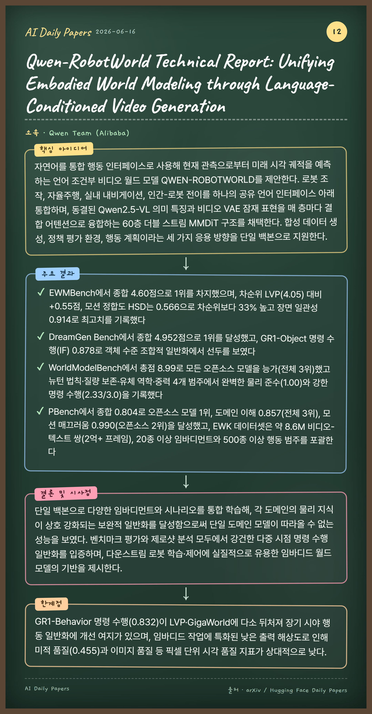
🏛 Qwen Team (Alibaba)
핵심 아이디어
자연어를 통합 행동 인터페이스로 사용해 현재 관측으로부터 미래 시각 궤적을 예측하는 언어 조건부 비디오 월드 모델 QWEN-ROBOTWORLD를 제안한다. 로봇 조작, 자율주행, 실내 내비게이션, 인간-로봇 전이를 하나의 공유 언어 인터페이스 아래 통합하며, 동결된 Qwen2.5-VL 의미 특징과 비디오 VAE 잠재 표현을 매 층마다 결합 어텐션으로 융합하는 60층 더블 스트림 MMDiT 구조를 채택한다. 합성 데이터 생성, 정책 평가 환경, 행동 계획이라는 세 가지 응용 방향을 단일 백본으로 지원한다.
주요 결과
EWMBench에서 종합 4.60점으로 1위를 차지했으며, 차순위 LVP(4.05) 대비 +0.55점, 모션 정합도 HSD는 0.566으로 차순위보다 33% 높고 장면 일관성 0.914로 최고치를 기록했다
DreamGen Bench에서 종합 4.952점으로 1위를 달성했고, GR1-Object 명령 수행(IF) 0.878로 객체 수준 조합적 일반화에서 선두를 보였다
WorldModelBench에서 총점 8.99로 모든 오픈소스 모델을 능가(전체 3위)했고 뉴턴 법칙·질량 보존·유체 역학·중력 4개 범주에서 완벽한 물리 준수(1.00)와 강한 명령 수행(2.33/3.0)을 기록했다
PBench에서 종합 0.804로 오픈소스 모델 1위, 도메인 이해 0.857(전체 3위), 모션 매끄러움 0.990(오픈소스 2위)을 달성했고, EWK 데이터셋은 약 8.6M 비디오-텍스트 쌍(2억+ 프레임), 20종 이상 임바디먼트와 500종 이상 행동 범주를 포괄한다
결론 및 시사점
단일 백본으로 다양한 임바디먼트와 시나리오를 통합 학습해, 각 도메인의 물리 지식이 상호 강화되는 보완적 일반화를 달성함으로써 단일 도메인 모델이 따라올 수 없는 성능을 보였다. 벤치마크 평가와 제로샷 분석 모두에서 강건한 다중 시점 명령 수행 일반화를 입증하며, 다운스트림 로봇 학습·제어에 실질적으로 유용한 임바디드 월드 모델의 기반을 제시한다.
한계점
GR1-Behavior 명령 수행(0.832)이 LVP·GigaWorld에 다소 뒤처져 장기 시야 행동 일반화에 개선 여지가 있으며, 임바디드 작업에 특화된 낮은 출력 해상도로 인해 미적 품질(0.455)과 이미지 품질 등 픽셀 단위 시각 품질 지표가 상대적으로 낮다.
장기 세션 LLM 에이전트에서 컨텍스트 누적은 추론 비용을 키우는데, 기존 가지치기 방식은 시퀀스 레이아웃을 변형해 프리픽스 불일치와 KV 캐시 무효화를 일으킨다. TokenPilot은 전역 단계의 Ingestion-Aware Compaction(변동 필드를 안정적 플레이스홀더로 고정)과 지역 단계의 Lifecycle-Aware Eviction(잔여 효용이 소진될 때만 보수적으로 제거)을 결합한 이중 단위 프레임워크다.
주요 결과
격리 모드 비용을 Vanilla $8.31→$3.22(약 61% 절감), Claw-Eval은 56% 절감하며 정확도 유지(81.0점)
연속 모드에서 비용을 61%, Claw-Eval은 87% 절감($81.52→$10.58)
프리픽스 안정화로 캐시 적중률이 38.7%→79.2%, 67.2%→83.1%로 상승
Ablation: 캐시 미스 토큰 5.943M→1.589M, 캐시 읽기 토큰 추가 65% 절감
결론 및 시사점
메모리 관리를 전역 압축과 지역 제거로 분리함으로써 텍스트 감축과 엄격한 프롬프트 캐시 정렬을 동시에 달성해, 작업 성능 저하 없이 추론 비용을 대폭 절감했다. 장기 에이전트 시스템을 위한 확장 가능하고 비용 효율적인 기반을 제공한다.
한계점
추정기가 모호·희소한 상호작용에서 세그먼트를 오분류할 수 있고, 임계값·배치 크기는 환경별 튜닝이 필요하며, 프리픽스 캐싱을 지원하는 백엔드에 의존하고 이질적 작업 스트림에서는 캐시 재사용률이 낮아질 수 있다.
CODA-BENCH: Can Code Agents Handle Data-Intensive Tasks?
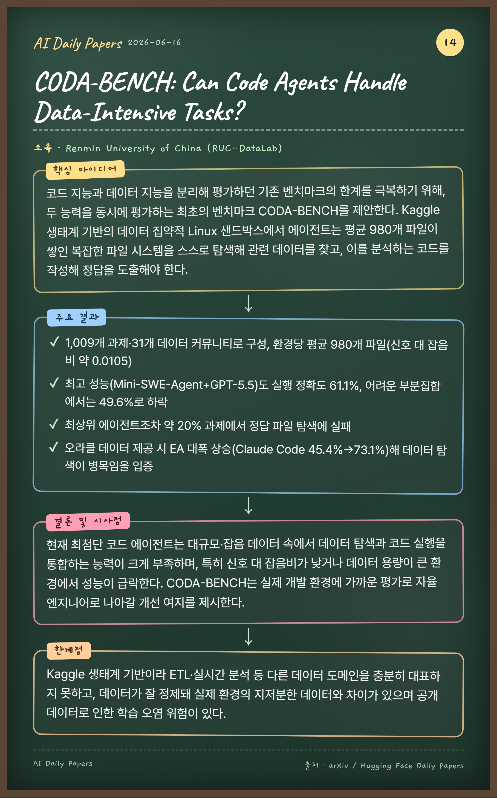
🏛 Renmin University of China (RUC-DataLab)
핵심 아이디어
코드 지능과 데이터 지능을 분리해 평가하던 기존 벤치마크의 한계를 극복하기 위해, 두 능력을 동시에 평가하는 최초의 벤치마크 CODA-BENCH를 제안한다. Kaggle 생태계 기반의 데이터 집약적 Linux 샌드박스에서 에이전트는 평균 980개 파일이 쌓인 복잡한 파일 시스템을 스스로 탐색해 관련 데이터를 찾고, 이를 분석하는 코드를 작성해 정답을 도출해야 한다.
주요 결과
1,009개 과제·31개 데이터 커뮤니티로 구성, 환경당 평균 980개 파일(신호 대 잡음비 약 0.0105)
최고 성능(Mini-SWE-Agent+GPT-5.5)도 실행 정확도 61.1%, 어려운 부분집합에서는 49.6%로 하락
최상위 에이전트조차 약 20% 과제에서 정답 파일 탐색에 실패
오라클 데이터 제공 시 EA 대폭 상승(Claude Code 45.4%→73.1%)해 데이터 탐색이 병목임을 입증
결론 및 시사점
현재 최첨단 코드 에이전트는 대규모·잡음 데이터 속에서 데이터 탐색과 코드 실행을 통합하는 능력이 크게 부족하며, 특히 신호 대 잡음비가 낮거나 데이터 용량이 큰 환경에서 성능이 급락한다. CODA-BENCH는 실제 개발 환경에 가까운 평가로 자율 엔지니어로 나아갈 개선 여지를 제시한다.
한계점
Kaggle 생태계 기반이라 ETL·실시간 분석 등 다른 데이터 도메인을 충분히 대표하지 못하고, 데이터가 잘 정제돼 실제 환경의 지저분한 데이터와 차이가 있으며 공개 데이터로 인한 학습 오염 위험이 있다.
Retrieve, Don't Retrain: Extending Vision Language Action Models to New Tasks at Test Time
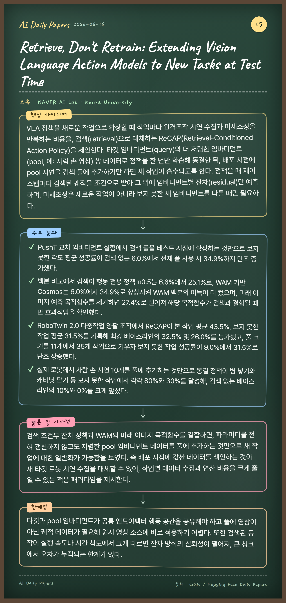
🏛 NAVER AI Lab, Korea University
핵심 아이디어
VLA 정책을 새로운 작업으로 확장할 때 작업마다 원격조작 시연 수집과 미세조정을 반복하는 비용을, 검색(retrieval)으로 대체하는 ReCAP(Retrieval-Conditioned Action Policy)을 제안한다. 타깃 임바디먼트(query)와 더 저렴한 임바디먼트(pool, 예: 사람 손 영상) 쌍 데이터로 정책을 한 번만 학습해 동결한 뒤, 배포 시점에 pool 시연을 검색 풀에 추가하기만 하면 새 작업이 흡수되도록 한다. 정책은 매 제어 스텝마다 검색된 궤적을 조건으로 받아 그 위에 임바디먼트별 잔차(residual)만 예측하며, 미세조정은 새로운 작업이 아니라 보지 못한 새 임바디먼트를 다룰 때만 필요하다.
주요 결과
PushT 교차 임바디먼트 실험에서 검색 풀을 테스트 시점에 확장하는 것만으로 보지 못한 각도 평균 성공률이 검색 없는 6.0%에서 전체 풀 사용 시 34.9%까지 단조 증가했다.
백본 비교에서 검색이 행동 전용 정책 π0.5는 6.6%에서 25.1%로, WAM 기반 Cosmos는 6.0%에서 34.9%로 향상시켜 WAM 백본의 이득이 더 컸으며, 미래 이미지 예측 목적함수를 제거하면 27.4%로 떨어져 해당 목적함수가 검색과 결합될 때만 효과적임을 확인했다.
RoboTwin 2.0 다중작업 양팔 조작에서 ReCAP이 본 작업 평균 43.5%, 보지 못한 작업 평균 31.5%를 기록해 최강 베이스라인의 32.5% 및 26.0%를 능가했고, 풀 크기를 11개에서 35개 작업으로 키우자 보지 못한 작업 성공률이 9.0%에서 31.5%로 단조 상승했다.
실제 로봇에서 사람 손 시연 10개를 풀에 추가하는 것만으로 동결 정책이 병 넣기와 캐비닛 닫기 등 보지 못한 작업에서 각각 80%와 30%를 달성해, 검색 없는 베이스라인의 10%와 0%를 크게 앞섰다.
결론 및 시사점
검색 조건부 잔차 정책과 WAM의 미래 이미지 목적함수를 결합하면, 파라미터를 전혀 갱신하지 않고도 저렴한 pool 임바디먼트 데이터를 풀에 추가하는 것만으로 새 작업에 대한 일반화가 가능함을 보였다. 즉 배포 시점에 값싼 데이터를 색인하는 것이 새 타깃 로봇 시연 수집을 대체할 수 있어, 작업별 데이터 수집과 연산 비용을 크게 줄일 수 있는 적응 패러다임을 제시한다.
한계점
타깃과 pool 임바디먼트가 공통 엔드이펙터 행동 공간을 공유해야 하고 풀에 영상이 아닌 궤적 데이터가 필요해 원시 영상 소스에 바로 적용하기 어렵다. 또한 검색된 동작이 실행 속도나 시간 척도에서 크게 다르면 잔차 방식의 신뢰성이 떨어져, 큰 청크에서 오차가 누적되는 한계가 있다.
Where Did It Go Wrong? Process-Level Evaluation of Web Agents with Semantic State Tracking
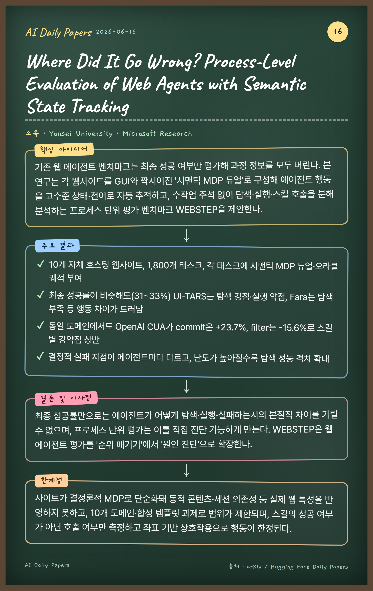
🏛 Yonsei University, Microsoft Research
핵심 아이디어
기존 웹 에이전트 벤치마크는 최종 성공 여부만 평가해 과정 정보를 모두 버린다. 본 연구는 각 웹사이트를 GUI와 짝지어진 '시맨틱 MDP 듀얼'로 구성해 에이전트 행동을 고수준 상태·전이로 자동 추적하고, 수작업 주석 없이 탐색·실행·스킬 호출을 분해 분석하는 프로세스 단위 평가 벤치마크 WEBSTEP을 제안한다.
주요 결과
10개 자체 호스팅 웹사이트, 1,800개 태스크, 각 태스크에 시맨틱 MDP 듀얼·오라클 궤적 부여
최종 성공률이 비슷해도(31~33%) UI-TARS는 탐색 강점·실행 약점, Fara는 탐색 부족 등 행동 차이가 드러남
GD^2PO: Mitigating Multi-Reward Conflicts via Group-Dynamic reward-Decoupled Policy Optimization
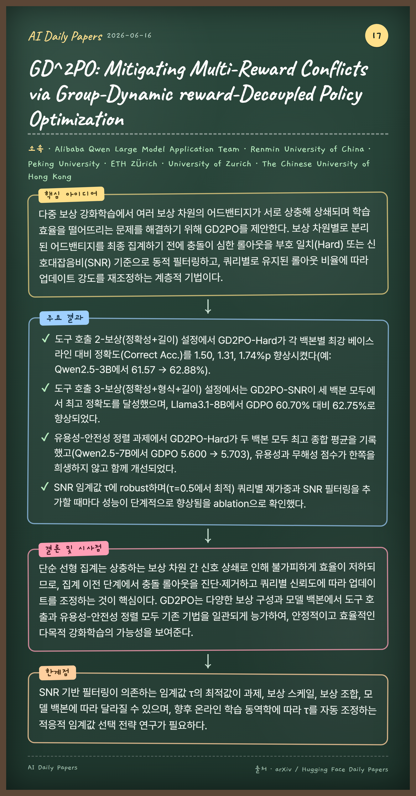
🏛 Alibaba Qwen Large Model Application Team, Renmin University of China, Peking University, ETH Zürich, University of Zurich, The Chinese University of Hong Kong
핵심 아이디어
다중 보상 강화학습에서 여러 보상 차원의 어드밴티지가 서로 상충해 상쇄되며 학습 효율을 떨어뜨리는 문제를 해결하기 위해 GD2PO를 제안한다. 보상 차원별로 분리된 어드밴티지를 최종 집계하기 전에 충돌이 심한 롤아웃을 부호 일치(Hard) 또는 신호대잡음비(SNR) 기준으로 동적 필터링하고, 쿼리별로 유지된 롤아웃 비율에 따라 업데이트 강도를 재조정하는 계층적 기법이다.
주요 결과
도구 호출 2-보상(정확성+길이) 설정에서 GD2PO-Hard가 각 백본별 최강 베이스라인 대비 정확도(Correct Acc.)를 1.50, 1.31, 1.74%p 향상시켰다(예: Qwen2.5-3B에서 61.57 -> 62.88%).
도구 호출 3-보상(정확성+형식+길이) 설정에서는 GD2PO-SNR이 세 백본 모두에서 최고 정확도를 달성했으며, Llama3.1-8B에서 GDPO 60.70% 대비 62.75%로 향상되었다.
유용성-안전성 정렬 과제에서 GD2PO-Hard가 두 백본 모두 최고 종합 평균을 기록했고(Qwen2.5-7B에서 GDPO 5.600 -> 5.703), 유용성과 무해성 점수가 한쪽을 희생하지 않고 함께 개선되었다.
SNR 임계값 τ에 robust하며(τ=0.5에서 최적) 쿼리별 재가중과 SNR 필터링을 추가할 때마다 성능이 단계적으로 향상됨을 ablation으로 확인했다.
결론 및 시사점
단순 선형 집계는 상충하는 보상 차원 간 신호 상쇄로 인해 불가피하게 효율이 저하되므로, 집계 이전 단계에서 충돌 롤아웃을 진단·제거하고 쿼리별 신뢰도에 따라 업데이트를 조정하는 것이 핵심이다. GD2PO는 다양한 보상 구성과 모델 백본에서 도구 호출과 유용성-안전성 정렬 모두 기존 기법을 일관되게 능가하여, 안정적이고 효율적인 다목적 강화학습의 가능성을 보여준다.
한계점
SNR 기반 필터링이 의존하는 임계값 τ의 최적값이 과제, 보상 스케일, 보상 조합, 모델 백본에 따라 달라질 수 있으며, 향후 온라인 학습 동역학에 따라 τ를 자동 조정하는 적응적 임계값 선택 전략 연구가 필요하다.
Memento: Reconstruct to Remember for Consistent Long Video Generation
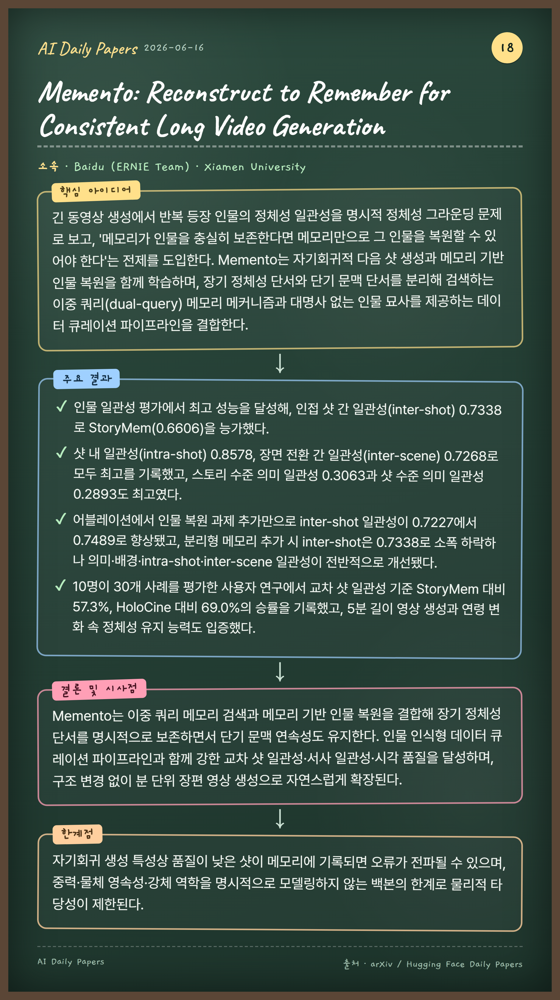
🏛 Baidu (ERNIE Team), Xiamen University
핵심 아이디어
긴 동영상 생성에서 반복 등장 인물의 정체성 일관성을 명시적 정체성 그라운딩 문제로 보고, '메모리가 인물을 충실히 보존한다면 메모리만으로 그 인물을 복원할 수 있어야 한다'는 전제를 도입한다. Memento는 자기회귀적 다음 샷 생성과 메모리 기반 인물 복원을 함께 학습하며, 장기 정체성 단서와 단기 문맥 단서를 분리해 검색하는 이중 쿼리(dual-query) 메모리 메커니즘과 대명사 없는 인물 묘사를 제공하는 데이터 큐레이션 파이프라인을 결합한다.
주요 결과
인물 일관성 평가에서 최고 성능을 달성해, 인접 샷 간 일관성(inter-shot) 0.7338로 StoryMem(0.6606)을 능가했다.
샷 내 일관성(intra-shot) 0.8578, 장면 전환 간 일관성(inter-scene) 0.7268로 모두 최고를 기록했고, 스토리 수준 의미 일관성 0.3063과 샷 수준 의미 일관성 0.2893도 최고였다.
어블레이션에서 인물 복원 과제 추가만으로 inter-shot 일관성이 0.7227에서 0.7489로 향상됐고, 분리형 메모리 추가 시 inter-shot은 0.7338로 소폭 하락하나 의미·배경·intra-shot·inter-scene 일관성이 전반적으로 개선됐다.
10명이 30개 사례를 평가한 사용자 연구에서 교차 샷 일관성 기준 StoryMem 대비 57.3%, HoloCine 대비 69.0%의 승률을 기록했고, 5분 길이 영상 생성과 연령 변화 속 정체성 유지 능력도 입증했다.
결론 및 시사점
Memento는 이중 쿼리 메모리 검색과 메모리 기반 인물 복원을 결합해 장기 정체성 단서를 명시적으로 보존하면서 단기 문맥 연속성도 유지한다. 인물 인식형 데이터 큐레이션 파이프라인과 함께 강한 교차 샷 일관성·서사 일관성·시각 품질을 달성하며, 구조 변경 없이 분 단위 장편 영상 생성으로 자연스럽게 확장된다.
한계점
자기회귀 생성 특성상 품질이 낮은 샷이 메모리에 기록되면 오류가 전파될 수 있으며, 중력·물체 영속성·강체 역학을 명시적으로 모델링하지 않는 백본의 한계로 물리적 타당성이 제한된다.
SP^3: Spherical Priors for Plug-and-Play Restoration
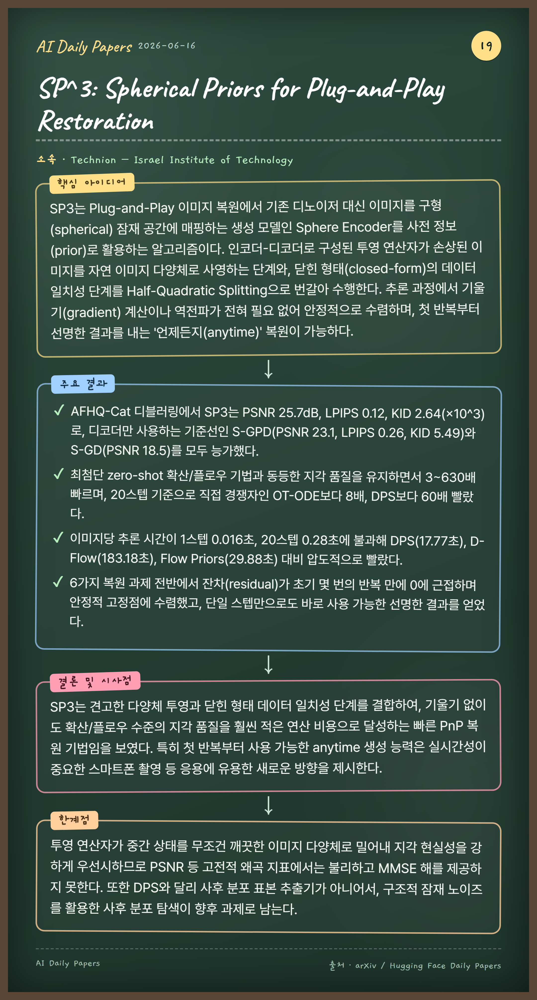
🏛 Technion – Israel Institute of Technology
핵심 아이디어
SP3는 Plug-and-Play 이미지 복원에서 기존 디노이저 대신 이미지를 구형(spherical) 잠재 공간에 매핑하는 생성 모델인 Sphere Encoder를 사전 정보(prior)로 활용하는 알고리즘이다. 인코더-디코더로 구성된 투영 연산자가 손상된 이미지를 자연 이미지 다양체로 사영하는 단계와, 닫힌 형태(closed-form)의 데이터 일치성 단계를 Half-Quadratic Splitting으로 번갈아 수행한다. 추론 과정에서 기울기(gradient) 계산이나 역전파가 전혀 필요 없어 안정적으로 수렴하며, 첫 반복부터 선명한 결과를 내는 '언제든지(anytime)' 복원이 가능하다.
최첨단 zero-shot 확산/플로우 기법과 동등한 지각 품질을 유지하면서 3~630배 빠르며, 20스텝 기준으로 직접 경쟁자인 OT-ODE보다 8배, DPS보다 60배 빨랐다.
이미지당 추론 시간이 1스텝 0.016초, 20스텝 0.28초에 불과해 DPS(17.77초), D-Flow(183.18초), Flow Priors(29.88초) 대비 압도적으로 빨랐다.
6가지 복원 과제 전반에서 잔차(residual)가 초기 몇 번의 반복 만에 0에 근접하며 안정적 고정점에 수렴했고, 단일 스텝만으로도 바로 사용 가능한 선명한 결과를 얻었다.
결론 및 시사점
SP3는 견고한 다양체 투영과 닫힌 형태 데이터 일치성 단계를 결합하여, 기울기 없이도 확산/플로우 수준의 지각 품질을 훨씬 적은 연산 비용으로 달성하는 빠른 PnP 복원 기법임을 보였다. 특히 첫 반복부터 사용 가능한 anytime 생성 능력은 실시간성이 중요한 스마트폰 촬영 등 응용에 유용한 새로운 방향을 제시한다.
한계점
투영 연산자가 중간 상태를 무조건 깨끗한 이미지 다양체로 밀어내 지각 현실성을 강하게 우선시하므로 PSNR 등 고전적 왜곡 지표에서는 불리하고 MMSE 해를 제공하지 못한다. 또한 DPS와 달리 사후 분포 표본 추출기가 아니어서, 구조적 잠재 노이즈를 활용한 사후 분포 탐색이 향후 과제로 남는다.
멀티턴 LLM 서빙에서 비균일(non-uniform) KV 캐시 압축은 정확도를 잘 보존하지만, 기존 서빙 스택이 모든 어텐션 헤드의 KV 길이가 동일하다고 가정하기 때문에 페이지 단편화와 재할당 오버헤드, GPU 부하 불균형으로 실효성이 없었다. 저자들은 헤드별 KV 보존 패턴이 입력에 무관한 헤드 순위와 좁은 범위의 헤드별 비율이라는 2단계 구조적 규칙성을 가져 50개 샘플만으로 오프라인 보정이 가능하다는 점을 발견했다. 이를 바탕으로 런타임에 처리하던 작업을 정적으로 미리 해결하는 서빙 프레임워크 Tangram을 제안한다.
주요 결과
vLLM 기반으로 구현되어 기존 비균일 압축 기법의 정확도를 유지하면서 Full-KV 대비 종단간 처리량을 최대 2.6배 향상시켰다.
Budget Reservation으로 전체 prefill 실행 시간의 최대 25%를 차지하던 페이지 재할당(compress-and-reclaim) 비용을 완전히 제거했다.
Budget-Aware Clustering이 인접 헤드 그룹화 대비 전체 KV 캐시의 12~25%를 추가로 회수했으며, 페이지당 헤드 수는 4~8이 최적 균형점이었다.
AOT Load Balancing으로 비균일 캐시에서 최대 1.7배까지 증가하던 디코드 어텐션 지연을 줄였고, 디코드 단계의 15~20%를 소모하던 FlashInfer의 런타임 재계획 비용을 제거했다.
결론 및 시사점
Tangram은 모델 고유의 헤드별 보존 규칙성을 활용해 런타임에 처리하던 예산 예약, 단편 메모리 회수, GPU 부하 분산을 모두 정적으로 해결함으로써 비균일 KV 캐시 압축을 실제 서빙 스택에서 실용화했다. 이를 통해 기존 압축 기법의 정확도를 유지하면서 최대 2.6배의 처리량 향상을 달성하여, 알고리즘적 약속을 실제 시스템 성능으로 전환했다.
한계점
정확도 유지를 위해 안전 계수 기반의 추가 예산 여유분이 필요하며, 페이지당 헤드 수처럼 메모리 효율과 관리 오버헤드 사이의 트레이드오프를 모델별로 조정해야 한다.
UniDDT: Unifying Multimodal Understanding and Generation with Decoupled Diffusion Transformer
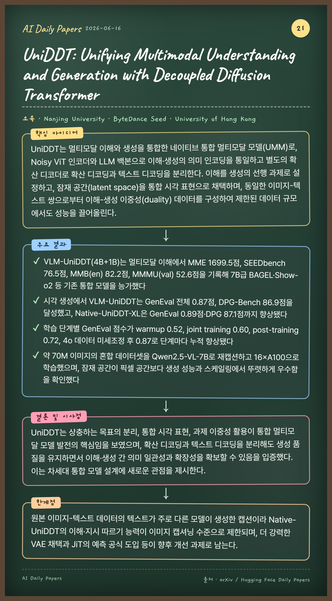
🏛 Nanjing University, ByteDance Seed, University of Hong Kong
핵심 아이디어
UniDDT는 멀티모달 이해와 생성을 통합한 네이티브 통합 멀티모달 모델(UMM)로, Noisy ViT 인코더와 LLM 백본으로 이해·생성의 의미 인코딩을 통일하고 별도의 확산 디코더로 확산 디코딩과 텍스트 디코딩을 분리한다. 이해를 생성의 선행 과제로 설정하고, 잠재 공간(latent space)을 통합 시각 표현으로 채택하며, 동일한 이미지-텍스트 쌍으로부터 이해-생성 이중성(duality) 데이터를 구성하여 제한된 데이터 규모에서도 성능을 끌어올린다.
주요 결과
VLM-UniDDT(4B+1B)는 멀티모달 이해에서 MME 1699.5점, SEEDbench 76.5점, MMB(en) 82.2점, MMMU(val) 52.6점을 기록해 7B급 BAGEL·Show-o2 등 기존 통합 모델을 능가했다
시각 생성에서 VLM-UniDDT는 GenEval 전체 0.87점, DPG-Bench 86.9점을 달성했고, Native-UniDDT-XL은 GenEval 0.89점·DPG 87.1점까지 향상됐다
학습 단계별 GenEval 점수가 warmup 0.52, joint training 0.60, post-training 0.72, 4o 데이터 미세조정 후 0.87로 단계마다 누적 향상됐다
약 70M 이미지의 혼합 데이터셋을 Qwen2.5-VL-7B로 재캡션하고 16×A100으로 학습했으며, 잠재 공간이 픽셀 공간보다 생성 성능과 스케일링에서 뚜렷하게 우수함을 확인했다
결론 및 시사점
UniDDT는 상충하는 목표의 분리, 통합 시각 표현, 과제 이중성 활용이 통합 멀티모달 모델 발전의 핵심임을 보였으며, 확산 디코딩과 텍스트 디코딩을 분리해도 생성 품질을 유지하면서 이해·생성 간 의미 일관성과 확장성을 확보할 수 있음을 입증했다. 이는 차세대 통합 모델 설계에 새로운 관점을 제시한다.
한계점
원본 이미지-텍스트 데이터의 텍스트가 주로 다른 모델이 생성한 캡션이라 Native-UniDDT의 이해·지시 따르기 능력이 이미지 캡셔닝 수준으로 제한되며, 더 강력한 VAE 채택과 JiT의 예측 공식 도입 등이 향후 개선 과제로 남는다.
Ling and Ring 2.6 Technical Report: Efficient and Instant Agentic Intelligence at Trillion-Parameter Scale
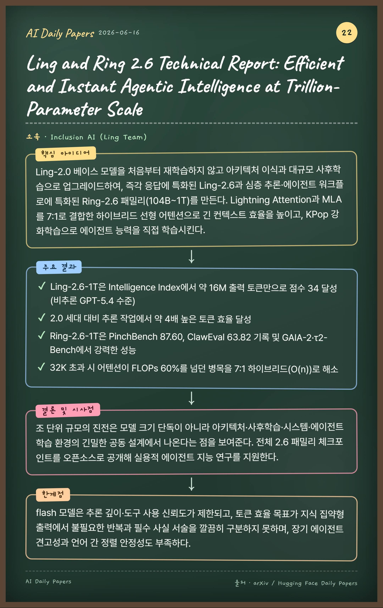
🏛 Inclusion AI (Ling Team)
핵심 아이디어
Ling-2.0 베이스 모델을 처음부터 재학습하지 않고 아키텍처 이식과 대규모 사후학습으로 업그레이드하여, 즉각 응답에 특화된 Ling-2.6과 심층 추론·에이전트 워크플로에 특화된 Ring-2.6 패밀리(104B~1T)를 만든다. Lightning Attention과 MLA를 7:1로 결합한 하이브리드 선형 어텐션으로 긴 컨텍스트 효율을 높이고, KPop 강화학습으로 에이전트 능력을 직접 학습시킨다.
주요 결과
Ling-2.6-1T은 Intelligence Index에서 약 16M 출력 토큰만으로 점수 34 달성(비추론 GPT-5.4 수준)
2.0 세대 대비 추론 작업에서 약 4배 높은 토큰 효율 달성
Ring-2.6-1T은 PinchBench 87.60, ClawEval 63.82 기록 및 GAIA-2·τ2-Bench에서 강력한 성능
PhoneHarness: Harnessing Phone-Use Agents through Mixed GUI, CLI, and Tool Actions
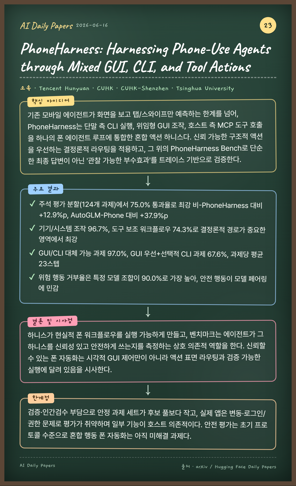
🏛 Tencent Hunyuan, CUHK, CUHK-Shenzhen, Tsinghua University
핵심 아이디어
기존 모바일 에이전트가 화면을 보고 탭/스와이프만 예측하는 한계를 넘어, PhoneHarness는 단말 측 CLI 실행, 위임형 GUI 조작, 호스트 측 MCP 도구 호출을 하나의 폰 에이전트 루프에 통합한 혼합 액션 하니스다. 신뢰 가능한 구조적 액션을 우선하는 결정론적 라우팅을 적용하고, 그 위의 PhoneHarness Bench로 단순한 최종 답변이 아닌 '관찰 가능한 부수효과'를 트레이스 기반으로 검증한다.
주요 결과
주석 평가 분할(124개 과제)에서 75.0% 통과율로 최강 비-PhoneHarness 대비 +12.9%p, AutoGLM-Phone 대비 +37.9%p
기기/시스템 조작 96.7%, 도구 보조 워크플로우 74.3%로 결정론적 경로가 중요한 영역에서 최강
GUI/CLI 대체 가능 과제 97.0%, GUI 우선+선택적 CLI 과제 67.6%, 과제당 평균 23스텝
위험 행동 거부율은 특정 모델 조합이 90.0%로 가장 높아, 안전 행동이 모델 페어링에 민감
결론 및 시사점
하니스가 현실적 폰 워크플로우를 실행 가능하게 만들고, 벤치마크는 에이전트가 그 하니스를 신뢰성 있고 안전하게 쓰는지를 측정하는 상호 의존적 역할을 한다. 신뢰할 수 있는 폰 자동화는 시각적 GUI 제어만이 아니라 액션 표면 라우팅과 검증 가능한 실행에 달려 있음을 시사한다.
한계점
검증·인간검수 부담으로 안정 과제 세트가 후보 풀보다 작고, 실제 앱은 변동·로그인/권한 문제로 평가가 취약하며 일부 기능이 호스트 의존적이다. 안전 평가는 초기 프로토콜 수준으로 혼합 행동 폰 자동화는 아직 미해결 과제다.
Hierarchical Advantage Weighting for Online RL Fine-Tuning of VLAs from Sparse Episode Outcomes
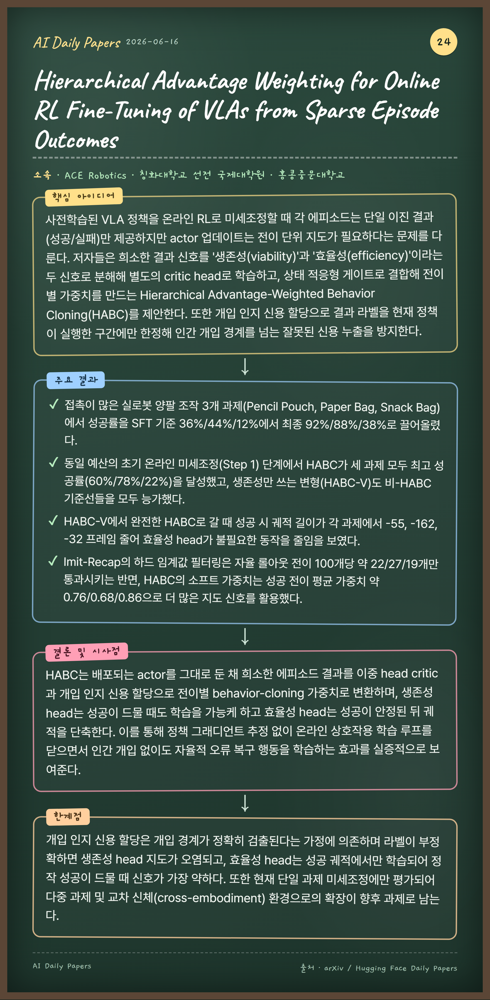
🏛 ACE Robotics, 칭화대학교 선전 국제대학원, 홍콩중문대학교
핵심 아이디어
사전학습된 VLA 정책을 온라인 RL로 미세조정할 때 각 에피소드는 단일 이진 결과(성공/실패)만 제공하지만 actor 업데이트는 전이 단위 지도가 필요하다는 문제를 다룬다. 저자들은 희소한 결과 신호를 '생존성(viability)'과 '효율성(efficiency)'이라는 두 신호로 분해해 별도의 critic head로 학습하고, 상태 적응형 게이트로 결합해 전이별 가중치를 만드는 Hierarchical Advantage-Weighted Behavior Cloning(HABC)를 제안한다. 또한 개입 인지 신용 할당으로 결과 라벨을 현재 정책이 실행한 구간에만 한정해 인간 개입 경계를 넘는 잘못된 신용 누출을 방지한다.
주요 결과
접촉이 많은 실로봇 양팔 조작 3개 과제(Pencil Pouch, Paper Bag, Snack Bag)에서 성공률을 SFT 기준 36%/44%/12%에서 최종 92%/88%/38%로 끌어올렸다.
동일 예산의 초기 온라인 미세조정(Step 1) 단계에서 HABC가 세 과제 모두 최고 성공률(60%/78%/22%)을 달성했고, 생존성만 쓰는 변형(HABC-V)도 비-HABC 기준선들을 모두 능가했다.
HABC-V에서 완전한 HABC로 갈 때 성공 시 궤적 길이가 각 과제에서 -55, -162, -32 프레임 줄어 효율성 head가 불필요한 동작을 줄임을 보였다.
Imit-Recap의 하드 임계값 필터링은 자율 롤아웃 전이 100개당 약 22/27/19개만 통과시키는 반면, HABC의 소프트 가중치는 성공 전이 평균 가중치 약 0.76/0.68/0.86으로 더 많은 지도 신호를 활용했다.
결론 및 시사점
HABC는 배포되는 actor를 그대로 둔 채 희소한 에피소드 결과를 이중 head critic과 개입 인지 신용 할당으로 전이별 behavior-cloning 가중치로 변환하며, 생존성 head는 성공이 드물 때도 학습을 가능케 하고 효율성 head는 성공이 안정된 뒤 궤적을 단축한다. 이를 통해 정책 그래디언트 추정 없이 온라인 상호작용 학습 루프를 닫으면서 인간 개입 없이도 자율적 오류 복구 행동을 학습하는 효과를 실증적으로 보여준다.
한계점
개입 인지 신용 할당은 개입 경계가 정확히 검출된다는 가정에 의존하며 라벨이 부정확하면 생존성 head 지도가 오염되고, 효율성 head는 성공 궤적에서만 학습되어 정작 성공이 드물 때 신호가 가장 약하다. 또한 현재 단일 과제 미세조정에만 평가되어 다중 과제 및 교차 신체(cross-embodiment) 환경으로의 확장이 향후 과제로 남는다.
Nemotron 3 Ultra: Open, Efficient Mixture-of-Experts Hybrid Mamba-Transformer Model for Agentic Reasoning
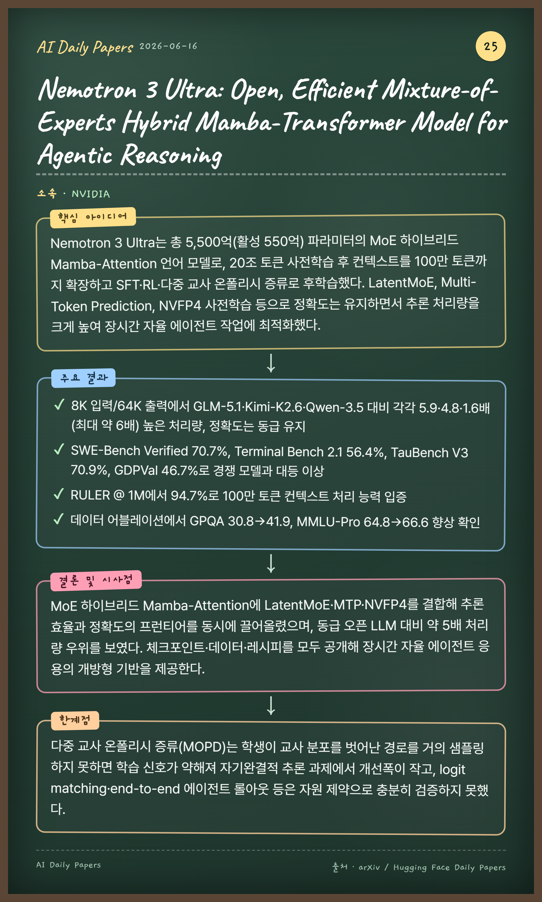
🏛 NVIDIA
핵심 아이디어
Nemotron 3 Ultra는 총 5,500억(활성 550억) 파라미터의 MoE 하이브리드 Mamba-Attention 언어 모델로, 20조 토큰 사전학습 후 컨텍스트를 100만 토큰까지 확장하고 SFT·RL·다중 교사 온폴리시 증류로 후학습했다. LatentMoE, Multi-Token Prediction, NVFP4 사전학습 등으로 정확도는 유지하면서 추론 처리량을 크게 높여 장시간 자율 에이전트 작업에 최적화했다.
주요 결과
8K 입력/64K 출력에서 GLM-5.1·Kimi-K2.6·Qwen-3.5 대비 각각 5.9·4.8·1.6배(최대 약 6배) 높은 처리량, 정확도는 동급 유지
SWE-Bench Verified 70.7%, Terminal Bench 2.1 56.4%, TauBench V3 70.9%, GDPVal 46.7%로 경쟁 모델과 대등 이상
RULER @ 1M에서 94.7%로 100만 토큰 컨텍스트 처리 능력 입증
데이터 어블레이션에서 GPQA 30.8→41.9, MMLU-Pro 64.8→66.6 향상 확인
결론 및 시사점
MoE 하이브리드 Mamba-Attention에 LatentMoE·MTP·NVFP4를 결합해 추론 효율과 정확도의 프런티어를 동시에 끌어올렸으며, 동급 오픈 LLM 대비 약 5배 처리량 우위를 보였다. 체크포인트·데이터·레시피를 모두 공개해 장시간 자율 에이전트 응용의 개방형 기반을 제공한다.
한계점
다중 교사 온폴리시 증류(MOPD)는 학생이 교사 분포를 벗어난 경로를 거의 샘플링하지 못하면 학습 신호가 약해져 자기완결적 추론 과제에서 개선폭이 작고, logit matching·end-to-end 에이전트 롤아웃 등은 자원 제약으로 충분히 검증하지 못했다.
Unstable Features, Reproducible Subspaces: Understanding Seed Dependence in Sparse Autoencoders
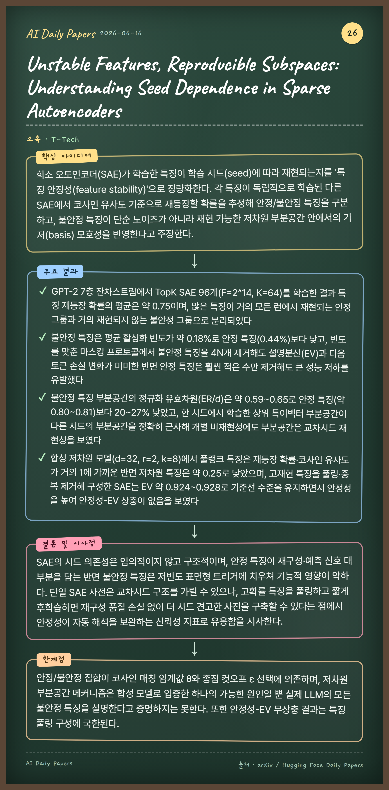
🏛 T-Tech
핵심 아이디어
희소 오토인코더(SAE)가 학습한 특징이 학습 시드(seed)에 따라 재현되는지를 '특징 안정성(feature stability)'으로 정량화한다. 각 특징이 독립적으로 학습된 다른 SAE에서 코사인 유사도 기준으로 재등장할 확률을 추정해 안정/불안정 특징을 구분하고, 불안정 특징이 단순 노이즈가 아니라 재현 가능한 저차원 부분공간 안에서의 기저(basis) 모호성을 반영한다고 주장한다.
주요 결과
GPT-2 7층 잔차스트림에서 TopK SAE 96개(F=2^14, K=64)를 학습한 결과 특징 재등장 확률의 평균은 약 0.75이며, 많은 특징이 거의 모든 런에서 재현되는 안정 그룹과 거의 재현되지 않는 불안정 그룹으로 분리되었다
불안정 특징은 평균 활성화 빈도가 약 0.18%로 안정 특징(0.44%)보다 낮고, 빈도를 맞춘 마스킹 프로토콜에서 불안정 특징을 4N개 제거해도 설명분산(EV)과 다음 토큰 손실 변화가 미미한 반면 안정 특징은 훨씬 적은 수만 제거해도 큰 성능 저하를 유발했다
불안정 특징 부분공간의 정규화 유효차원(ER/d)은 약 0.59~0.65로 안정 특징(약 0.80~0.81)보다 20~27% 낮았고, 한 시드에서 학습한 상위 특이벡터 부분공간이 다른 시드의 부분공간을 정확히 근사해 개별 비재현성에도 부분공간은 교차시드 재현성을 보였다
합성 저차원 모델(d=32, r=2, k=8)에서 풀랭크 특징은 재등장 확률·코사인 유사도가 거의 1에 가까운 반면 저차원 특징은 약 0.25로 낮았으며, 고재현 특징을 풀링·중복 제거해 구성한 SAE는 EV 약 0.924~0.928로 기준선 수준을 유지하면서 안정성을 높여 안정성-EV 상충이 없음을 보였다
결론 및 시사점
SAE의 시드 의존성은 임의적이지 않고 구조적이며, 안정 특징이 재구성·예측 신호 대부분을 담는 반면 불안정 특징은 저빈도 표면형 트리거에 치우쳐 기능적 영향이 약하다. 단일 SAE 사전은 교차시드 구조를 가릴 수 있으나, 고확률 특징을 풀링하고 짧게 후학습하면 재구성 품질 손실 없이 더 시드 견고한 사전을 구축할 수 있다는 점에서 안정성이 자동 해석을 보완하는 신뢰성 지표로 유용함을 시사한다.
한계점
안정/불안정 집합이 코사인 매칭 임계값 θ와 종점 컷오프 ε 선택에 의존하며, 저차원 부분공간 메커니즘은 합성 모델로 입증한 하나의 가능한 원인일 뿐 실제 LLM의 모든 불안정 특징을 설명한다고 증명하지는 못한다. 또한 안정성-EV 무상충 결과는 특징 풀링 구성에 국한된다.
MMDiff: Extending Diffusion Transformers for Multi-Modal Generation
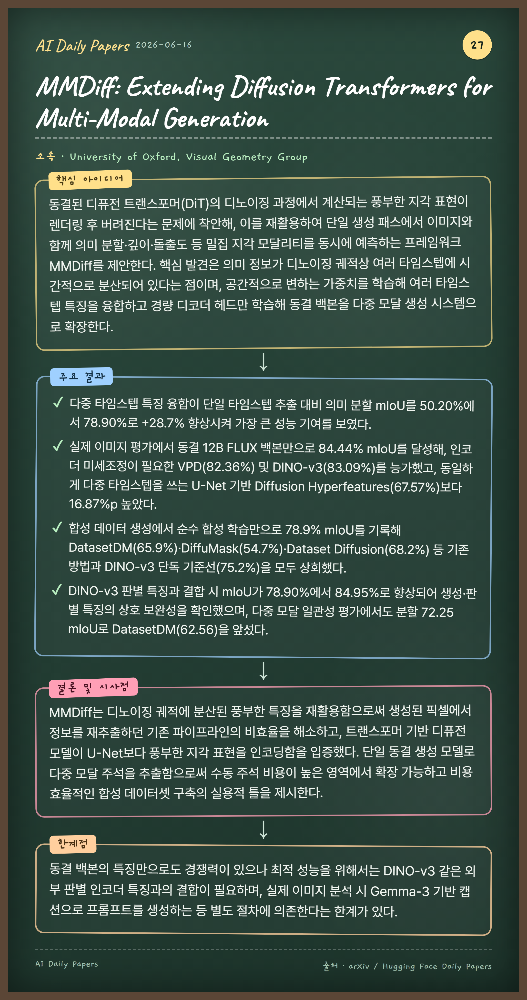
🏛 University of Oxford, Visual Geometry Group
핵심 아이디어
동결된 디퓨전 트랜스포머(DiT)의 디노이징 과정에서 계산되는 풍부한 지각 표현이 렌더링 후 버려진다는 문제에 착안해, 이를 재활용하여 단일 생성 패스에서 이미지와 함께 의미 분할·깊이·돌출도 등 밀집 지각 모달리티를 동시에 예측하는 프레임워크 MMDiff를 제안한다. 핵심 발견은 의미 정보가 디노이징 궤적상 여러 타임스텝에 시간적으로 분산되어 있다는 점이며, 공간적으로 변하는 가중치를 학습해 여러 타임스텝 특징을 융합하고 경량 디코더 헤드만 학습해 동결 백본을 다중 모달 생성 시스템으로 확장한다.
주요 결과
다중 타임스텝 특징 융합이 단일 타임스텝 추출 대비 의미 분할 mIoU를 50.20%에서 78.90%로 +28.7% 향상시켜 가장 큰 성능 기여를 보였다.
실제 이미지 평가에서 동결 12B FLUX 백본만으로 84.44% mIoU를 달성해, 인코더 미세조정이 필요한 VPD(82.36%) 및 DINO-v3(83.09%)를 능가했고, 동일하게 다중 타임스텝을 쓰는 U-Net 기반 Diffusion Hyperfeatures(67.57%)보다 16.87%p 높았다.
합성 데이터 생성에서 순수 합성 학습만으로 78.9% mIoU를 기록해 DatasetDM(65.9%)·DiffuMask(54.7%)·Dataset Diffusion(68.2%) 등 기존 방법과 DINO-v3 단독 기준선(75.2%)을 모두 상회했다.
DINO-v3 판별 특징과 결합 시 mIoU가 78.90%에서 84.95%로 향상되어 생성·판별 특징의 상호 보완성을 확인했으며, 다중 모달 일관성 평가에서도 분할 72.25 mIoU로 DatasetDM(62.56)을 앞섰다.
결론 및 시사점
MMDiff는 디노이징 궤적에 분산된 풍부한 특징을 재활용함으로써 생성된 픽셀에서 정보를 재추출하던 기존 파이프라인의 비효율을 해소하고, 트랜스포머 기반 디퓨전 모델이 U-Net보다 풍부한 지각 표현을 인코딩함을 입증했다. 단일 동결 생성 모델로 다중 모달 주석을 추출함으로써 수동 주석 비용이 높은 영역에서 확장 가능하고 비용 효율적인 합성 데이터셋 구축의 실용적 틀을 제시한다.
한계점
동결 백본의 특징만으로도 경쟁력이 있으나 최적 성능을 위해서는 DINO-v3 같은 외부 판별 인코더 특징과의 결합이 필요하며, 실제 이미지 분석 시 Gemma-3 기반 캡션으로 프롬프트를 생성하는 등 별도 절차에 의존한다는 한계가 있다.
🏛 Stanford Institute for Human-Centered AI (HAI), AI Index Steering Committee, Schmidt Sciences, Epoch AI, McKinsey & Company, LinkedIn, GitHub, Lightcast, Quid, Zeki
핵심 아이디어
스탠퍼드 HAI의 AI Index 아홉 번째 연례 보고서로, 연구개발·기술성능·책임 있는 AI·경제·과학·의료·교육·정책·여론 등 전 분야에 걸친 AI 동향을 독립적이고 검증된 데이터로 종합한다. 올해는 처음으로 과학과 의료를 독립 챕터로 다루며, 'AI 역량의 빠른 발전 속도를 사회의 거버넌스·평가·교육·데이터 인프라가 따라가지 못하는 격차'를 핵심 주제로 삼았다.
주요 결과
AI 역량은 정체되지 않고 가속되고 있으며, 2025년 주목할 만한 프런티어 모델의 90% 이상을 산업계가 생산했고 SWE-bench Verified 코딩 벤치마크 성능은 1년 만에 인간 기준선의 60%에서 100% 가까이로 상승했으며 조직 도입률은 88%, 대학생 5명 중 4명이 생성형 AI를 사용한다.
미국과 중국의 모델 성능 격차는 사실상 사라져 2026년 3월 기준 Anthropic 최상위 모델이 2.7% 차이로 선두이며, 미국 민간 AI 투자는 2,859억 달러로 중국(124억 달러)의 23배가 넘지만 미국으로 이주하는 AI 연구자 수는 2017년 대비 89% 감소했다.
생성형 AI는 3년 만에 인구 대비 53% 도입률에 도달해 PC나 인터넷보다 빠르게 확산됐고 미국 소비자에 대한 연간 가치는 1,720억 달러로 추정되며, AI 데이터센터 전력 용량은 29.6GW로 증가하고 Grok 4 학습 추정 배출량은 7만 2,816톤 CO2 환산량에 달하는 등 환경 부담이 커지고 있다.
책임 있는 AI는 역량 발전 속도를 따라가지 못해 문서화된 AI 사고가 2024년 233건에서 362건으로 급증했으며, AI는 IMO 금메달을 따면서도 아날로그 시계는 50.1%만 정확히 읽는 등 '들쭉날쭉한 프런티어(jagged frontier)'를 보이고 로봇은 가정 내 작업의 12%만 성공한다.
결론 및 시사점
AI는 기술·자본·도입 측면에서 역사상 유례없는 속도로 확장되고 있으나, 이를 평가·관리·규율하는 사회 시스템은 그 속도를 따라가지 못하고 있다. 정책 입안자·연구자·기업·대중은 측정 가능한 지표뿐 아니라 아직 측정하지 못하는 영역까지 직시해 정보에 근거한 판단을 내려야 한다.
한계점
벤치마크 포화와 프런티어 연구소의 공개 축소로 측정 신뢰성이 약해지고 있으며, 의료 등 일부 영역은 실제 임상 데이터 기반 근거가 부족(임상 AI 연구의 5%만 실제 임상 데이터 활용)해 보고서가 다룰 수 있는 데이터의 범위 자체가 제한적이다.
PermaVid: Consistent Video Generation Across Edits via Disentangled Context Memory
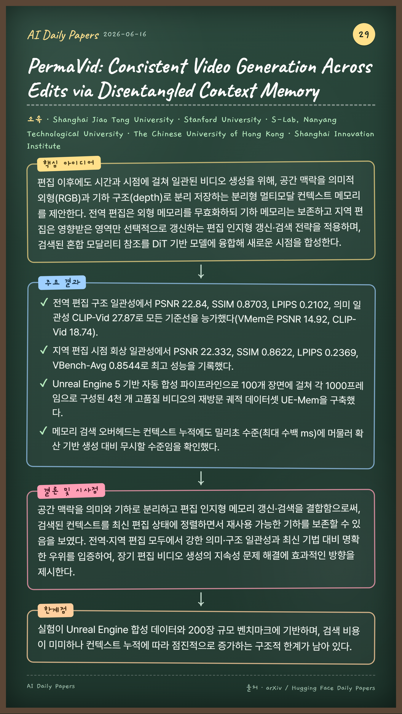
🏛 Shanghai Jiao Tong University, Stanford University, S-Lab, Nanyang Technological University, The Chinese University of Hong Kong, Shanghai Innovation Institute
핵심 아이디어
편집 이후에도 시간과 시점에 걸쳐 일관된 비디오 생성을 위해, 공간 맥락을 의미적 외형(RGB)과 기하 구조(depth)로 분리 저장하는 분리형 멀티모달 컨텍스트 메모리를 제안한다. 전역 편집은 외형 메모리를 무효화하되 기하 메모리는 보존하고 지역 편집은 영향받은 영역만 선택적으로 갱신하는 편집 인지형 갱신·검색 전략을 적용하며, 검색된 혼합 모달리티 참조를 DiT 기반 모델에 융합해 새로운 시점을 합성한다.
주요 결과
전역 편집 구조 일관성에서 PSNR 22.84, SSIM 0.8703, LPIPS 0.2102, 의미 일관성 CLIP-Vid 27.87로 모든 기준선을 능가했다(VMem은 PSNR 14.92, CLIP-Vid 18.74).
지역 편집 시점 회상 일관성에서 PSNR 22.332, SSIM 0.8622, LPIPS 0.2369, VBench-Avg 0.8544로 최고 성능을 기록했다.
Unreal Engine 5 기반 자동 합성 파이프라인으로 100개 장면에 걸쳐 각 1000프레임으로 구성된 4천 개 고품질 비디오의 재방문 궤적 데이터셋 UE-Mem을 구축했다.
메모리 검색 오버헤드는 컨텍스트 누적에도 밀리초 수준(최대 수백 ms)에 머물러 확산 기반 생성 대비 무시할 수준임을 확인했다.
결론 및 시사점
공간 맥락을 의미와 기하로 분리하고 편집 인지형 메모리 갱신·검색을 결합함으로써, 검색된 컨텍스트를 최신 편집 상태에 정렬하면서 재사용 가능한 기하를 보존할 수 있음을 보였다. 전역·지역 편집 모두에서 강한 의미·구조 일관성과 최신 기법 대비 명확한 우위를 입증하여, 장기 편집 비디오 생성의 지속성 문제 해결에 효과적인 방향을 제시한다.
한계점
실험이 Unreal Engine 합성 데이터와 200장 규모 벤치마크에 기반하며, 검색 비용이 미미하나 컨텍스트 누적에 따라 점진적으로 증가하는 구조적 한계가 남아 있다.
🏛 Harvard University, SaluteDevices, MIRAI, Zendesk, Shanghai University of Finance and Economics, Google LLC, Salesforce, Cornell University, Astera Institute, Indian Institute of Technology Kharagpur, Barclays, Aarhus University, Stanford University
핵심 아이디어
MVEB는 분류, 제로샷 분류, 클러스터링, 쌍 분류, 검색, 비디오 중심 질의응답의 6개 과제군에 걸친 23개 과제로 구성된 비디오 임베딩 벤치마크로, 184개 과제 풀(MVEB+)에서 상관관계 기반 중복 제거로 선별되었다. MTEB 생태계에 통합되어 텍스트·이미지·오디오·비디오를 통합 평가하며, 오디오를 포함하는 모든 데이터셋을 비디오 단독과 비디오+오디오 변형으로 체계적으로 짝지어 오디오가 비디오 이해에 기여하는 시점을 직접 측정한다.
주요 결과
33개 모델을 평가한 결과 단일 모델이 모든 영역을 지배하지 못했으며, MLLM 기반 임베딩(LCO-Embedding-Omni-7B, Borda 1위·평균 57.6)이 분류·클러스터링·쌍 분류·QA를 선도하고 멀티모달 바인딩(eBind)이 검색(62.3)과 제로샷 분류(61.1)를 선도했다
오디오의 기여는 데이터셋 레이블의 출처에 좌우되어, 오디오·시각 양쪽에서 레이블이 생성된 AV-grounded 데이터셋에서는 평균 +0.016 향상되고 시각만으로 생성된 V-grounded에서는 -0.046 저하되어 약 6포인트 격차가 과제 유형과 모델 계열 전반에 일관되게 나타났다
오디오 경로가 없는 텍스트-비디오 임베더 Qwen3-VL-Embedding-8B가 MVEB(text, video) 리더보드에서 평균 60.9로 1위를 차지해, 모든 오디오+비디오+텍스트 모델(LCO-Embedding-Omni-7B 56.8)을 앞섰다
대조 임베딩 단계 없이 hidden-state 풀링만 사용한 생성형 MLLM(Qwen2.5-Omni-7B, 평균 12.8)은 동급 적응 모델(e5-omni-7B 55.0) 대비 한 자릿수 수준으로 붕괴해 교차모달 과제에서 실패했고, 23개 과제 MVEB는 184개 과제 MVEB+ 대비 약 7~10배 빠르면서도 점수 상관(Pearson r=0.996, Spearman ρ=0.944)을 유지했다
결론 및 시사점
MVEB는 비디오 임베딩 모델을 위한 통합 평가 표면을 MTEB 생태계 내에서 과제·모델 버전 관리와 커뮤니티 기여 파이프라인과 함께 제공해 벤치마크가 분야와 함께 진화할 수 있게 한다. 교차모달 성능에는 대조 임베딩 단계가 사실상 전제 조건이며, 학습 데이터 정렬이 백본 규모보다 더 중요하다는 점이 실무적 시사점으로 도출되었다.
한계점
모델 명단은 33개 공개 체크포인트의 스냅샷이라 빠르게 변하는 분야를 완전히 포괄하지 못하고, 저자원 언어·장편 영상·일부 세분 도메인의 커버리지가 얇으며 일부 데이터셋(특히 감정 인식)의 레이블 노이즈와 학습 데이터 미공개로 인한 오염 위험이 남아 있다.
Prompt-Level Distillation: A Non-Parametric Alternative to Model Fine-Tuning for Efficient Reasoning
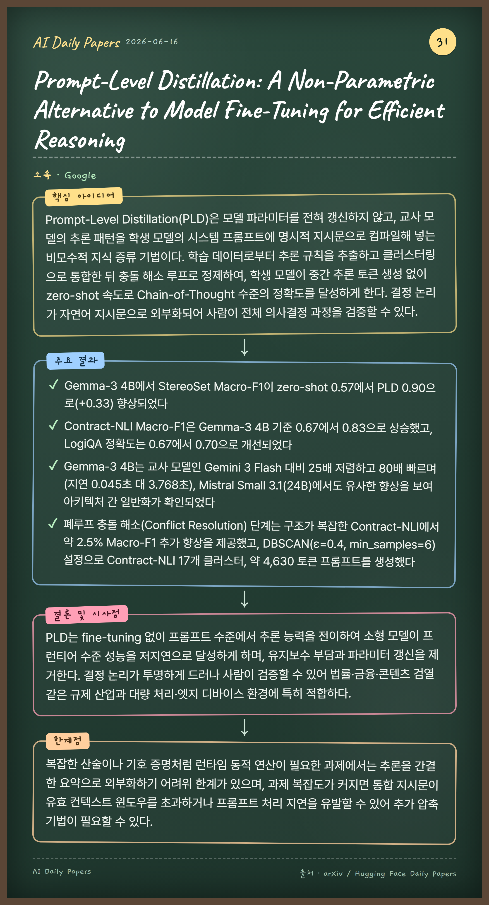
🏛 Google
핵심 아이디어
Prompt-Level Distillation(PLD)은 모델 파라미터를 전혀 갱신하지 않고, 교사 모델의 추론 패턴을 학생 모델의 시스템 프롬프트에 명시적 지시문으로 컴파일해 넣는 비모수적 지식 증류 기법이다. 학습 데이터로부터 추론 규칙을 추출하고 클러스터링으로 통합한 뒤 충돌 해소 루프로 정제하여, 학생 모델이 중간 추론 토큰 생성 없이 zero-shot 속도로 Chain-of-Thought 수준의 정확도를 달성하게 한다. 결정 논리가 자연어 지시문으로 외부화되어 사람이 전체 의사결정 과정을 검증할 수 있다.
Gemma-3 4B는 교사 모델인 Gemini 3 Flash 대비 25배 저렴하고 80배 빠르며(지연 0.045초 대 3.768초), Mistral Small 3.1(24B)에서도 유사한 향상을 보여 아키텍처 간 일반화가 확인되었다
폐루프 충돌 해소(Conflict Resolution) 단계는 구조가 복잡한 Contract-NLI에서 약 2.5% Macro-F1 추가 향상을 제공했고, DBSCAN(ε=0.4, min_samples=6) 설정으로 Contract-NLI 17개 클러스터, 약 4,630 토큰 프롬프트를 생성했다
결론 및 시사점
PLD는 fine-tuning 없이 프롬프트 수준에서 추론 능력을 전이하여 소형 모델이 프런티어 수준 성능을 저지연으로 달성하게 하며, 유지보수 부담과 파라미터 갱신을 제거한다. 결정 논리가 투명하게 드러나 사람이 검증할 수 있어 법률·금융·콘텐츠 검열 같은 규제 산업과 대량 처리·엣지 디바이스 환경에 특히 적합하다.
한계점
복잡한 산술이나 기호 증명처럼 런타임 동적 연산이 필요한 과제에서는 추론을 간결한 요약으로 외부화하기 어려워 한계가 있으며, 과제 복잡도가 커지면 통합 지시문이 유효 컨텍스트 윈도우를 초과하거나 프롬프트 처리 지연을 유발할 수 있어 추가 압축 기법이 필요할 수 있다.
EgoPhys: Learning Generalizable Physics Models of Deformable Objects from Egocentric Video
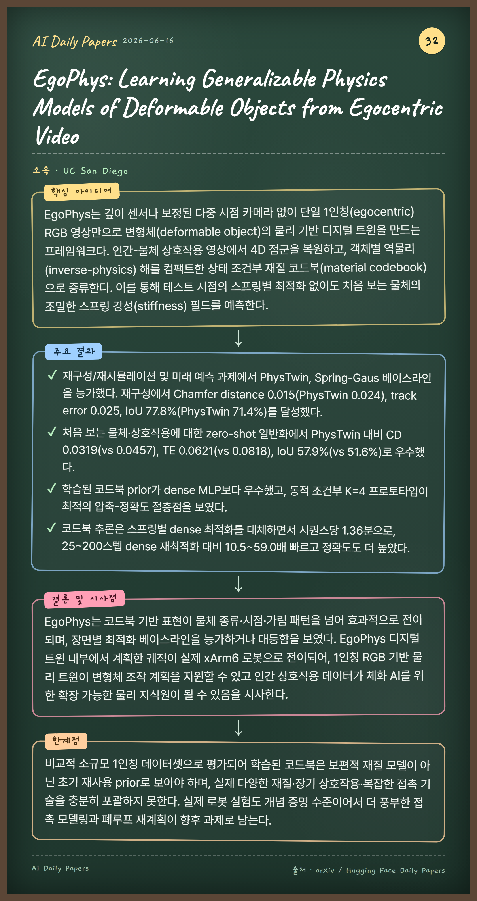
🏛 UC San Diego
핵심 아이디어
EgoPhys는 깊이 센서나 보정된 다중 시점 카메라 없이 단일 1인칭(egocentric) RGB 영상만으로 변형체(deformable object)의 물리 기반 디지털 트윈을 만드는 프레임워크다. 인간-물체 상호작용 영상에서 4D 점군을 복원하고, 객체별 역물리(inverse-physics) 해를 컴팩트한 상태 조건부 재질 코드북(material codebook)으로 증류한다. 이를 통해 테스트 시점의 스프링별 최적화 없이도 처음 보는 물체의 조밀한 스프링 강성(stiffness) 필드를 예측한다.
주요 결과
재구성/재시뮬레이션 및 미래 예측 과제에서 PhysTwin, Spring-Gaus 베이스라인을 능가했다. 재구성에서 Chamfer distance 0.015(PhysTwin 0.024), track error 0.025, IoU 77.8%(PhysTwin 71.4%)를 달성했다.
처음 보는 물체·상호작용에 대한 zero-shot 일반화에서 PhysTwin 대비 CD 0.0319(vs 0.0457), TE 0.0621(vs 0.0818), IoU 57.9%(vs 51.6%)로 우수했다.
학습된 코드북 prior가 dense MLP보다 우수했고, 동적 조건부 K=4 프로토타입이 최적의 압축-정확도 절충점을 보였다.
코드북 추론은 스프링별 dense 최적화를 대체하면서 시퀀스당 1.36분으로, 25~200스텝 dense 재최적화 대비 10.5~59.0배 빠르고 정확도도 더 높았다.
결론 및 시사점
EgoPhys는 코드북 기반 표현이 물체 종류·시점·가림 패턴을 넘어 효과적으로 전이되며, 장면별 최적화 베이스라인을 능가하거나 대등함을 보였다. EgoPhys 디지털 트윈 내부에서 계획한 궤적이 실제 xArm6 로봇으로 전이되어, 1인칭 RGB 기반 물리 트윈이 변형체 조작 계획을 지원할 수 있고 인간 상호작용 데이터가 체화 AI를 위한 확장 가능한 물리 지식원이 될 수 있음을 시사한다.
한계점
비교적 소규모 1인칭 데이터셋으로 평가되어 학습된 코드북은 보편적 재질 모델이 아닌 초기 재사용 prior로 보아야 하며, 실제 다양한 재질·장기 상호작용·복잡한 접촉 기술을 충분히 포괄하지 못한다. 실제 로봇 실험도 개념 증명 수준이어서 더 풍부한 접촉 모델링과 폐루프 재계획이 향후 과제로 남는다.
LaWAM: Latent World Action Models for Efficient Dynamics-Aware Robot Policies
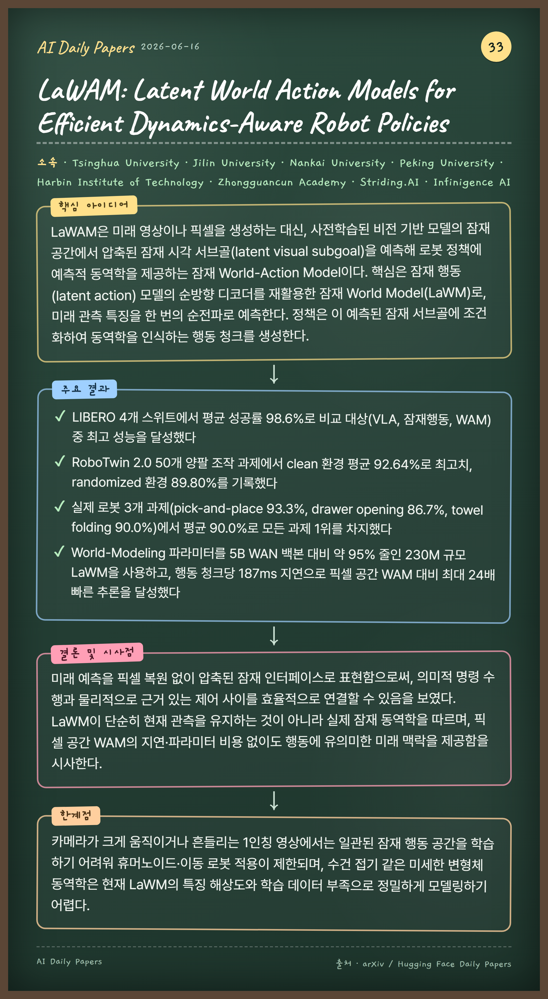
🏛 Tsinghua University, Jilin University, Nankai University, Peking University, Harbin Institute of Technology, Zhongguancun Academy, Striding.AI, Infinigence AI
핵심 아이디어
LaWAM은 미래 영상이나 픽셀을 생성하는 대신, 사전학습된 비전 기반 모델의 잠재 공간에서 압축된 잠재 시각 서브골(latent visual subgoal)을 예측해 로봇 정책에 예측적 동역학을 제공하는 잠재 World-Action Model이다. 핵심은 잠재 행동(latent action) 모델의 순방향 디코더를 재활용한 잠재 World Model(LaWM)로, 미래 관측 특징을 한 번의 순전파로 예측한다. 정책은 이 예측된 잠재 서브골에 조건화하여 동역학을 인식하는 행동 청크를 생성한다.
주요 결과
LIBERO 4개 스위트에서 평균 성공률 98.6%로 비교 대상(VLA, 잠재행동, WAM) 중 최고 성능을 달성했다
RoboTwin 2.0 50개 양팔 조작 과제에서 clean 환경 평균 92.64%로 최고치, randomized 환경 89.80%를 기록했다
실제 로봇 3개 과제(pick-and-place 93.3%, drawer opening 86.7%, towel folding 90.0%)에서 평균 90.0%로 모든 과제 1위를 차지했다
World-Modeling 파라미터를 5B WAN 백본 대비 약 95% 줄인 230M 규모 LaWM을 사용하고, 행동 청크당 187ms 지연으로 픽셀 공간 WAM 대비 최대 24배 빠른 추론을 달성했다
결론 및 시사점
미래 예측을 픽셀 복원 없이 압축된 잠재 인터페이스로 표현함으로써, 의미적 명령 수행과 물리적으로 근거 있는 제어 사이를 효율적으로 연결할 수 있음을 보였다. LaWM이 단순히 현재 관측을 유지하는 것이 아니라 실제 잠재 동역학을 따르며, 픽셀 공간 WAM의 지연·파라미터 비용 없이도 행동에 유의미한 미래 맥락을 제공함을 시사한다.
한계점
카메라가 크게 움직이거나 흔들리는 1인칭 영상에서는 일관된 잠재 행동 공간을 학습하기 어려워 휴머노이드·이동 로봇 적용이 제한되며, 수건 접기 같은 미세한 변형체 동역학은 현재 LaWM의 특징 해상도와 학습 데이터 부족으로 정밀하게 모델링하기 어렵다.
Who Flips? Self- and Cross-Model Counterarguments Reveal Answer Instability in LLMs
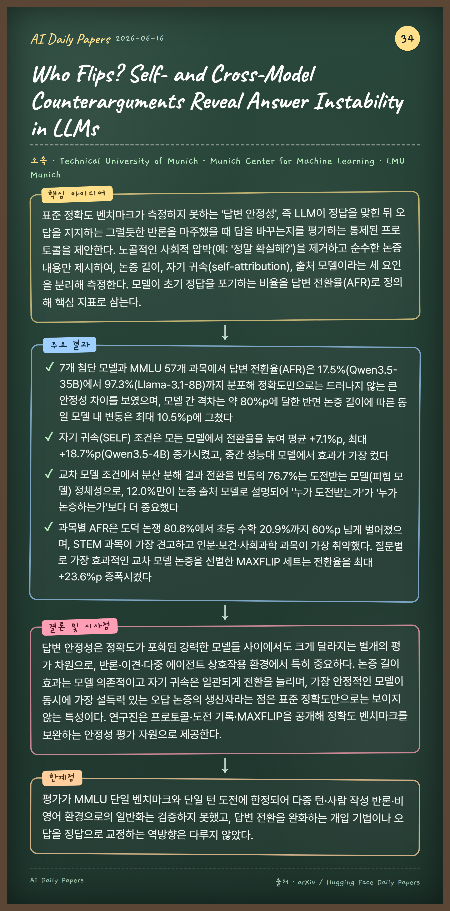
🏛 Technical University of Munich, Munich Center for Machine Learning, LMU Munich
핵심 아이디어
표준 정확도 벤치마크가 측정하지 못하는 '답변 안정성', 즉 LLM이 정답을 맞힌 뒤 오답을 지지하는 그럴듯한 반론을 마주했을 때 답을 바꾸는지를 평가하는 통제된 프로토콜을 제안한다. 노골적인 사회적 압박(예: '정말 확실해?')을 제거하고 순수한 논증 내용만 제시하여, 논증 길이, 자기 귀속(self-attribution), 출처 모델이라는 세 요인을 분리해 측정한다. 모델이 초기 정답을 포기하는 비율을 답변 전환율(AFR)로 정의해 핵심 지표로 삼는다.
주요 결과
7개 첨단 모델과 MMLU 57개 과목에서 답변 전환율(AFR)은 17.5%(Qwen3.5-35B)에서 97.3%(Llama-3.1-8B)까지 분포해 정확도만으로는 드러나지 않는 큰 안정성 차이를 보였으며, 모델 간 격차는 약 80%p에 달한 반면 논증 길이에 따른 동일 모델 내 변동은 최대 10.5%p에 그쳤다
자기 귀속(SELF) 조건은 모든 모델에서 전환율을 높여 평균 +7.1%p, 최대 +18.7%p(Qwen3.5-4B) 증가시켰고, 중간 성능대 모델에서 효과가 가장 컸다
교차 모델 조건에서 분산 분해 결과 전환율 변동의 76.7%는 도전받는 모델(피험 모델) 정체성으로, 12.0%만이 논증 출처 모델로 설명되어 '누가 도전받는가'가 '누가 논증하는가'보다 더 중요했다
과목별 AFR은 도덕 논쟁 80.8%에서 초등 수학 20.9%까지 60%p 넘게 벌어졌으며, STEM 과목이 가장 견고하고 인문·보건·사회과학 과목이 가장 취약했다. 질문별로 가장 효과적인 교차 모델 논증을 선별한 MAXFLIP 세트는 전환율을 최대 +23.6%p 증폭시켰다
결론 및 시사점
답변 안정성은 정확도가 포화된 강력한 모델들 사이에서도 크게 달라지는 별개의 평가 차원으로, 반론·이견·다중 에이전트 상호작용 환경에서 특히 중요하다. 논증 길이 효과는 모델 의존적이고 자기 귀속은 일관되게 전환을 늘리며, 가장 안정적인 모델이 동시에 가장 설득력 있는 오답 논증의 생산자라는 점은 표준 정확도만으로는 보이지 않는 특성이다. 연구진은 프로토콜·도전 기록·MAXFLIP을 공개해 정확도 벤치마크를 보완하는 안정성 평가 자원으로 제공한다.
한계점
평가가 MMLU 단일 벤치마크와 단일 턴 도전에 한정되어 다중 턴·사람 작성 반론·비영어 환경으로의 일반화는 검증하지 못했고, 답변 전환을 완화하는 개입 기법이나 오답을 정답으로 교정하는 역방향은 다루지 않았다.
Selective Control under Noisy Perception: Governance Failures Hidden by Aggregate Metrics in Modular Networks
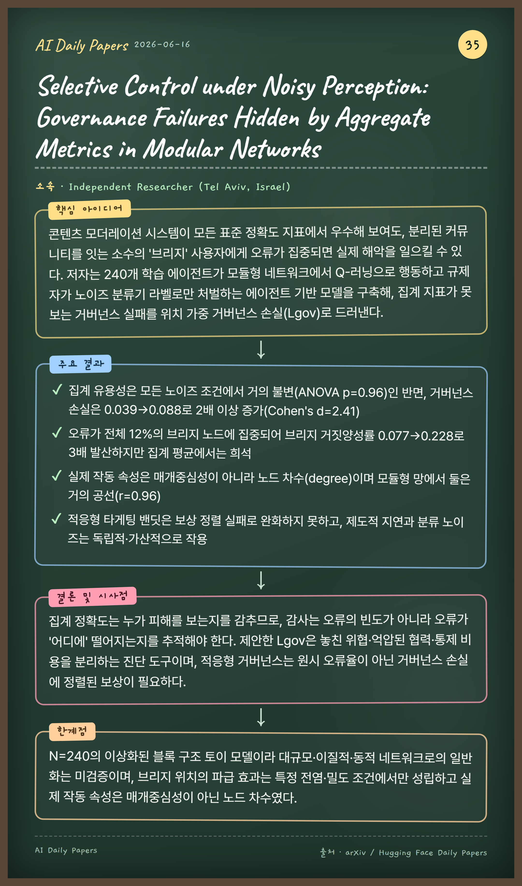
🏛 Independent Researcher (Tel Aviv, Israel)
핵심 아이디어
콘텐츠 모더레이션 시스템이 모든 표준 정확도 지표에서 우수해 보여도, 분리된 커뮤니티를 잇는 소수의 '브리지' 사용자에게 오류가 집중되면 실제 해악을 일으킬 수 있다. 저자는 240개 학습 에이전트가 모듈형 네트워크에서 Q-러닝으로 행동하고 규제자가 노이즈 분류기 라벨로만 처벌하는 에이전트 기반 모델을 구축해, 집계 지표가 못 보는 거버넌스 실패를 위치 가중 거버넌스 손실(Lgov)로 드러낸다.
주요 결과
집계 유용성은 모든 노이즈 조건에서 거의 불변(ANOVA p=0.96)인 반면, 거버넌스 손실은 0.039→0.088로 2배 이상 증가(Cohen's d=2.41)
오류가 전체 12%의 브리지 노드에 집중되어 브리지 거짓양성률 0.077→0.228로 3배 발산하지만 집계 평균에서는 희석
실제 작동 속성은 매개중심성이 아니라 노드 차수(degree)이며 모듈형 망에서 둘은 거의 공선(r=0.96)
적응형 타게팅 밴딧은 보상 정렬 실패로 완화하지 못하고, 제도적 지연과 분류 노이즈는 독립적·가산적으로 작용
결론 및 시사점
집계 정확도는 누가 피해를 보는지를 감추므로, 감사는 오류의 빈도가 아니라 오류가 '어디에' 떨어지는지를 추적해야 한다. 제안한 Lgov은 놓친 위협·억압된 협력·통제 비용을 분리하는 진단 도구이며, 적응형 거버넌스는 원시 오류율이 아닌 거버넌스 손실에 정렬된 보상이 필요하다.
한계점
N=240의 이상화된 블록 구조 토이 모델이라 대규모·이질적·동적 네트워크로의 일반화는 미검증이며, 브리지 위치의 파급 효과는 특정 전염·밀도 조건에서만 성립하고 실제 작동 속성은 매개중심성이 아닌 노드 차수였다.
🏛 New York University, Tsinghua University, University of Michigan
핵심 아이디어
로봇 데이터 없이 사람의 실제 파지 데이터만으로 다손가락 손의 능숙한 파지를 학습하는 HUG를 제안한다. 스마트 안경으로 수집한 1인칭 시점 데이터를 학습한 플로우 매칭 모델이 스테레오 카메라의 단일 RGB-D 영상에서 사용자가 지정한 물체에 대해 다양한 인간형 파지를 생성하며, 예측된 MANO 손 자세를 별도 학습 없이 여러 로봇 손으로 리타게팅해 제로샷 배치가 가능하다.
주요 결과
스마트 안경(Aria Gen 2)으로 41개 건물, 6,707개 물체 인스턴스, 100만 프레임(27.8시간) 규모의 1인칭 인간 파지 데이터셋 1M-HUGS를 구축했다
시뮬레이션 벤치마크 HUG-BENCH(미학습 물체 90개)에서 전체 모델이 검증셋 71.5%, 테스트셋 73.0%의 성공률을 기록했으며, 이는 오라클 상한(90.3%, 94.0%)과 약 20포인트 차이다
실제 테이블탑 환경의 30개 테스트 물체에서 66.7% 성공률로 기준 모델 Dex1B(43.7%)와 CAP(32.7%)를 각각 +23%, +34% 앞섰고, 야외(in-the-wild) 환경에서도 62.0%를 달성했다
3D 손실 제거 시 테스트 성공률이 73.0%에서 32.7%로 40포인트 이상 급락하고 손끝 접촉 오차가 14.6mm에서 35.7mm로 두 배 이상 증가해, 3D 감독이 가장 핵심적인 요소임을 확인했다
데이터 규모를 2.5만에서 100만 프레임으로 늘리자 테스트 성공률이 33%에서 73%로 상승하고 손끝 접촉 오차가 54.2mm에서 14.6mm로 감소했으며, 100만 프레임에서도 포화되지 않았다
결론 및 시사점
HUG는 로봇 데이터 없이 대규모 1인칭 인간 파지 데이터만으로 능숙한 로봇 파지를 학습하며, 새로운 스테레오 카메라, 로봇 손, 통제되지 않은 가정 환경에 제로샷으로 안정적이고 인간형에 가까운 파지를 전이한다. 1M-HUGS 데이터셋과 HUG-BENCH 벤치마크 공개를 통해 사람 수준의 범용 파지 연구를 촉진할 것으로 기대된다.
한계점
오른손 파지만 학습하고 MANO 손 형태를 고정해 왼손·양손 파지나 손별 형태 차이를 다루지 못하며, 개루프 실행으로 인해 접촉·들어올림 중 시각 피드백이 없고 매우 작거나 큰 물체에서 정확도가 떨어진다. 향후 모션 플래닝과 힘 인식 파지 도입이 한계 극복 방향으로 제시된다.
The Ghosts of Polymarket: When Off-Chain Matches Meet On-Chain Reverts
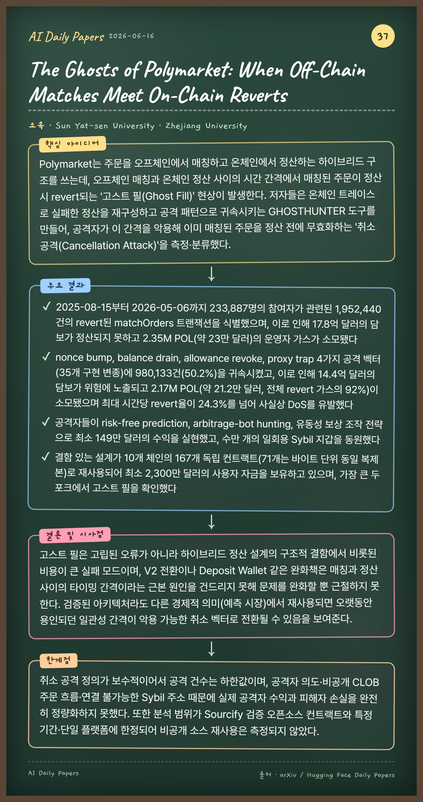
🏛 Sun Yat-sen University, Zhejiang University
핵심 아이디어
Polymarket는 주문을 오프체인에서 매칭하고 온체인에서 정산하는 하이브리드 구조를 쓰는데, 오프체인 매칭과 온체인 정산 사이의 시간 간격에서 매칭된 주문이 정산 시 revert되는 '고스트 필(Ghost Fill)' 현상이 발생한다. 저자들은 온체인 트레이스로 실패한 정산을 재구성하고 공격 패턴으로 귀속시키는 GHOSTHUNTER 도구를 만들어, 공격자가 이 간격을 악용해 이미 매칭된 주문을 정산 전에 무효화하는 '취소 공격(Cancellation Attack)'을 측정·분류했다.
주요 결과
2025-08-15부터 2026-05-06까지 233,887명의 참여자가 관련된 1,952,440건의 revert된 matchOrders 트랜잭션을 식별했으며, 이로 인해 17.8억 달러의 담보가 정산되지 못하고 2.35M POL(약 23만 달러)의 운영자 가스가 소모됐다
nonce bump, balance drain, allowance revoke, proxy trap 4가지 공격 벡터(35개 구현 변종)에 980,133건(50.2%)을 귀속시켰고, 이로 인해 14.4억 달러의 담보가 위험에 노출되고 2.17M POL(약 21.2만 달러, 전체 revert 가스의 92%)이 소모됐으며 최대 시간당 revert율이 24.3%를 넘어 사실상 DoS를 유발했다
공격자들이 risk-free prediction, arbitrage-bot hunting, 유동성 보상 조작 전략으로 최소 149만 달러의 수익을 실현했고, 수만 개의 일회용 Sybil 지갑을 동원했다
결함 있는 설계가 10개 체인의 167개 독립 컨트랙트(71개는 바이트 단위 동일 복제본)로 재사용되어 최소 2,300만 달러의 사용자 자금을 보유하고 있으며, 가장 큰 두 포크에서 고스트 필을 확인했다
결론 및 시사점
고스트 필은 고립된 오류가 아니라 하이브리드 정산 설계의 구조적 결함에서 비롯된 비용이 큰 실패 모드이며, V2 전환이나 Deposit Wallet 같은 완화책은 매칭과 정산 사이의 타이밍 간격이라는 근본 원인을 건드리지 못해 문제를 완화할 뿐 근절하지 못한다. 검증된 아키텍처라도 다른 경제적 의미(예측 시장)에서 재사용되면 오랫동안 용인되던 일관성 간격이 악용 가능한 취소 벡터로 전환될 수 있음을 보여준다.
한계점
취소 공격 정의가 보수적이어서 공격 건수는 하한값이며, 공격자 의도·비공개 CLOB 주문 흐름·연결 불가능한 Sybil 주소 때문에 실제 공격자 수익과 피해자 손실을 완전히 정량화하지 못했다. 또한 분석 범위가 Sourcify 검증 오픈소스 컨트랙트와 특정 기간·단일 플랫폼에 한정되어 비공개 소스 재사용은 측정되지 않았다.
Implicit Reasoning for Large Language Model-based Generative Recommendation
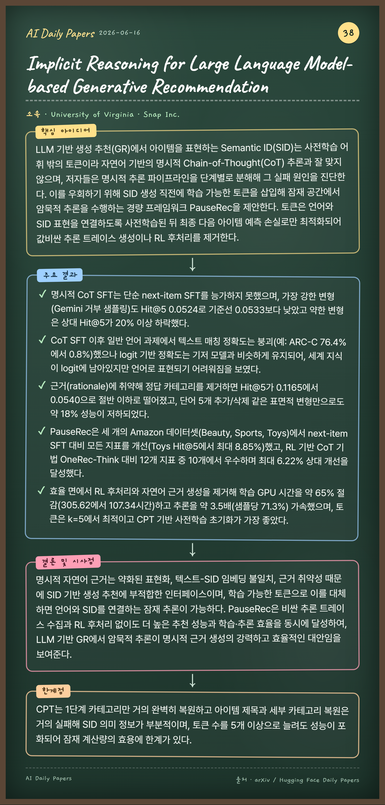
🏛 University of Virginia, Snap Inc.
핵심 아이디어
LLM 기반 생성 추천(GR)에서 아이템을 표현하는 Semantic ID(SID)는 사전학습 어휘 밖의 토큰이라 자연어 기반의 명시적 Chain-of-Thought(CoT) 추론과 잘 맞지 않으며, 저자들은 명시적 추론 파이프라인을 단계별로 분해해 그 실패 원인을 진단한다. 이를 우회하기 위해 SID 생성 직전에 학습 가능한 토큰을 삽입해 잠재 공간에서 암묵적 추론을 수행하는 경량 프레임워크 PauseRec을 제안한다. 토큰은 언어와 SID 표현을 연결하도록 사전학습된 뒤 최종 다음 아이템 예측 손실로만 최적화되어 값비싼 추론 트레이스 생성이나 RL 후처리를 제거한다.
주요 결과
명시적 CoT SFT는 단순 next-item SFT를 능가하지 못했으며, 가장 강한 변형(Gemini 거부 샘플링)도 Hit@5 0.0524로 기준선 0.0533보다 낮았고 약한 변형은 상대 Hit@5가 20% 이상 하락했다.
CoT SFT 이후 일반 언어 과제에서 텍스트 매칭 정확도는 붕괴(예: ARC-C 76.4%에서 0.8%)했으나 logit 기반 정확도는 기저 모델과 비슷하게 유지되어, 세계 지식이 logit에 남아있지만 언어로 표현되기 어려워짐을 보였다.
근거(rationale)에 취약해 정답 카테고리를 제거하면 Hit@5가 0.1165에서 0.0540으로 절반 이하로 떨어졌고, 단어 5개 추가/삭제 같은 표면적 변형만으로도 약 18% 성능이 저하되었다.
PauseRec은 세 개의 Amazon 데이터셋(Beauty, Sports, Toys)에서 next-item SFT 대비 모든 지표를 개선(Toys Hit@5에서 최대 8.85%)했고, RL 기반 CoT 기법 OneRec-Think 대비 12개 지표 중 10개에서 우수하며 최대 6.22% 상대 개선을 달성했다.
효율 면에서 RL 후처리와 자연어 근거 생성을 제거해 학습 GPU 시간을 약 65% 절감(305.62에서 107.34시간)하고 추론을 약 3.5배(샘플당 71.3%) 가속했으며, 토큰은 k=5에서 최적이고 CPT 기반 사전학습 초기화가 가장 좋았다.
결론 및 시사점
명시적 자연어 근거는 약화된 표현화, 텍스트-SID 임베딩 불일치, 근거 취약성 때문에 SID 기반 생성 추천에 부적합한 인터페이스이며, 학습 가능한 토큰으로 이를 대체하면 언어와 SID를 연결하는 잠재 추론이 가능하다. PauseRec은 비싼 추론 트레이스 수집과 RL 후처리 없이도 더 높은 추천 성능과 학습·추론 효율을 동시에 달성하여, LLM 기반 GR에서 암묵적 추론이 명시적 근거 생성의 강력하고 효율적인 대안임을 보여준다.
한계점
CPT는 1단계 카테고리만 거의 완벽히 복원하고 아이템 제목과 세부 카테고리 복원은 거의 실패해 SID 의미 정보가 부분적이며, 토큰 수를 5개 이상으로 늘려도 성능이 포화되어 잠재 계산량의 효용에 한계가 있다.
TuneJury는 텍스트 프롬프트와 오디오 클립으로부터 음악 선호 점수를 예측하는 인스턴스 단위의 페어와이즈 보상 모델이다. 동결된 오디오/텍스트 인코더 위에 약 2.8M 파라미터의 소형 MLP 헤드를 얹어, 네 개의 공개 인간 평가 데이터(Music Arena, MusicPrefs, AIME, SongEval)에서 가짜 라벨 증강 없이 약 17.5K 쌍의 페어와이즈 학습을 수행한다. 동일한 동결 보상 신호 하나로 best-of-N 선택, DITTO 잠재 최적화, expert-iteration 사후 학습 세 가지 응용을 모두 구동한다.
주요 결과
2,035쌍 held-out 테스트에서 페어와이즈 정확도 0.7086, ECE 0.0339를 달성했으며, 예측 마진이 커질수록 경험적 정확도가 약 0.46에서 약 0.97까지 상승한다.
가짜 라벨 없는 CMI-RM ablation 대비 PAM과 MusicEval에서 +0.17 SRCC(평균 SRCC 0.43 대 0.26, MusicEval 0.67 대 0.50) 우위를 보이고, 가짜 라벨로 증강된 전체 CMI-RM과는 OOD 분할에서 1~2%p 이내 격차를 유지한다.
best-of-N(Mode 1)에서 네 개 백본 모두 N=32까지 보상이 단조 증가하며, expert-iteration(Mode 3) 학습률 스윕에서 보상이 +0.166에서 +0.416까지 증가하는 보상-충실도 파레토 트레이드오프를 드러낸다.
anchor calibration은 약 100개 사후 보정 쌍으로 재학습 정확도 상한에 도달하며, K=10 앵커가 K=250 재학습과 동등해 약 25배의 데이터 효율을 보인다.
결론 및 시사점
TuneJury는 가짜 라벨 증강 없이도 공개 인간 평가 데이터만으로 경쟁력 있는 음악 선호 보상 모델을 구축할 수 있음을 보여주며, 단일 동결 보상이 선택·최적화·사후 학습 전반에 일관된 보상 향상을 제공한다. expert-iteration에서 나타난 보상 착취 패턴은 TuneJury가 단순 잡음이나 부수 지표의 재진술이 아닌 실제 선호 정렬 신호임을 입증하는 독립적 증거다.
한계점
실제 음악 대 AI 보정 신호가 희소(AIME의 MTG-Jamendo 부분집합에 한정)하고 보컬 음악 커버리지가 약하며, 2026-02 이후 신규 생성기에 대한 일치율이 약 0.54까지 하락하는 등 학습 분포 의존성이 한계로 남는다.